Alesis QuadraVerb Instruction Manual and Users Manual
Alesis · QuadraVerb
Introduction
The Alesis QuadraVerb is a full 20K bandwidth, stereo effects unit which allows up to 4 of the most popular digital effects (Reverb, Delay, Pitch Based Effects [like flange, chorus, etc.], and EQ) to be used simultaneously. The signal path and order of the effects is highly flexible and programmable. All effects parameters are fully adjustable and programmable.
The QuadraVerb is also MIDI controllable, with many of its parameters accessible from any MIDI controller in real time.
Features
- 16Hz to 20KHz Frequency Response
- Up to 4, excellent quality, simultaneous effects
- Touch sensitive, multi-speed contoured programming buttons with integral LED indicators
- Fully descriptive 32 character LCD display
- Stores up to 100 programs
- Full MIDI implementation
- Most parameters adjustable in real-time via external MIDI controllers
- Easy editing of all parameters
- All functions, parameters, and volume levels fully programmable
- Stereo in and out
- Extremely flexible effects routing and mixing
- Several choices of reverbs including: Plate, Room, Chamber, Hall, and Reverse
- Several choices of delay including: Ping Pong Delay, Mono Delay, and Stereo Delay
- Several choices of Pitch Shift, including: Mono Chorus, Stereo Chorus, Mono Flange, Stereo Flange, Pitch Detune, and Phase Shifter
- Several choices of Digital EQ, including: 3 band Parametric, 5 band Parametric, and 11 band Graphic
- Any or all Alesis presets can be recalled from ROM at any time
Section 1 — QuadraVerb Quick Start
Factory Programs
The QuadraVerb contains 90 factory supplied programs which can be modified or erased as needed. At any time one or all of these programs can be recalled in their original form, even if they have been erased or modified, since they are resident in Read Only Memory onboard the unit (see Recalling Factory Programs below).
Factory Programs 85 through 89 are demo programs that each feature a different Effects Configuration, which is a variation of the signal flow path in the QuadraVerb (see Configurations — Section 4 and Section 5). These examples contain the same parameter settings from program to program but the signal output of the QuadraVerb varies greatly due to the changes in the signal path and special variations of the 4 Effects. As you audition each of the 5 programs and listen to the difference in sound, press the CONFIG button to examine the differences in the signal flow path.
Please note:
- One or all of these programs can be recalled in their original form at any time, even if they have been erased or modified.
- It is possible to return to the factory default setting at any time by pressing both VALUE buttons simultaneously.
- All pages of the page display examples contained in the manual are referenced to one of programs 85 through 89.
Selecting Programs
- Press the PROGRAM button. The LED in the middle of the button will light.
- Press either VALUE button until the desired program is displayed. The harder the VALUE button is pressed, the faster the Program numbers will scroll.
Editing Programs
- Select the Effect (i.e. Reverb, Delay, Pitch, EQ) or function (i.e. MIDI, Config, Mix, Mod) that you wish to adjust. The LED in the middle of the button will light.
- Press the PAGE button to select the desired parameter to be edited. The harder the PAGE button is pressed, the faster the parameters will scroll.
- Press either VALUE button to adjust the desired parameter. The harder the VALUE button is pressed, the faster the numbers (or options) will scroll.
- Select another Effect or function, if desired.
Please note:
- Pressing both Value buttons at the same time will return the parameter to its default parameter value (see the Default Chart in the Appendix).
- You may compare the edited program with the stored program at any time by pressing the PROG button, then the “up” PAGE button. Press any button to return to the edited program.
Saving (Storing) Edited Programs
- Once a program has been edited to your liking, press the STORE button. The LED in the middle of the button will light.
- Press either VALUE button until the desired program location is displayed. The harder the VALUE button is pressed, the faster the Program numbers will scroll.
- Press the STORE button a second time to save the program.
Recalling Factory Programs
- Press the STORE button. The LED in the middle of the button will light.
- Press the “up” PAGE button to select the RECALL software page.
- Press either VALUE button until the desired program location is displayed.
- Press the “up” PAGE button again to move the cursor.
- Press either VALUE button until the desired program location is displayed.
- If desired, press the “up” PAGE button a third time to select the RECALL ALL 90 ALESIS PROGRAMS page.
- At any time, press the STORE button a second time to recall the factory program.
Naming a Stored Program
- Press the NAME button. The LED in the middle of the button will light.
- Press either VALUE button to scroll to the desired character. The harder the VALUE button is pressed, the faster the characters will scroll. If no character is desired, press both Value buttons at the same time.
- Press the PAGE button to move the cursor to the next character location of the display.
- Press either VALUE button to scroll to the desired character. If no character is desired, press both Value buttons at the same time.
- Repeat steps 2 & 3 until the program is named.
- Press either the Program button or any of the Effect or function buttons to exit the NAME page.
Section 2 — Description of Controls
Front Panel
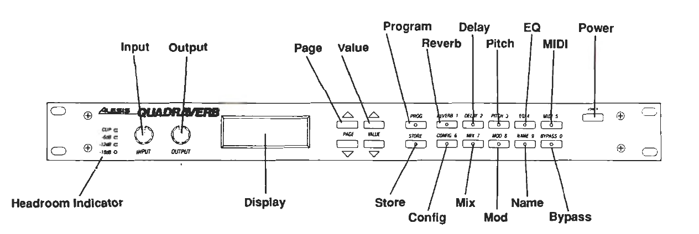
Headroom Indicator
The HEADROOM INDICATOR consists of four LEDs which indicate both the presence and level of an input signal (CLIP, −6dB, −12dB, −18dB). Care should be taken so that the red “Clip” LED does not light since this indicates the onset of distortion.
Input
The INPUT control is a stereo control that determines the master volume level of the signal being fed into both inputs of the QuadraVerb.
Output
The OUTPUT control determines the output level of the QuadraVerb’s stereo output jacks. Although this control is not programmable, it is possible to program the output levels internally via software (see Editing the Mix Levels).
Display
The QuadraVerb contains a 32 character, 2 line LCD display which indicates the current status of a program or parameter.
Page
When in the editing mode, repeatedly pressing the PAGE button will allow access to various parameters for editing. The page selection does not loop past the last page to the first page so as not to cause confusion regarding the number of possible pages in each section.
Value
Once a desired section and page has been selected, the displayed parameter can be edited using the VALUE buttons. These buttons, as well as the PAGE buttons, are touch sensitive, so that the amount of pressure used will affect the speed at which the values will change.
Program
The PROGRAM (PROG) button will display the name and number of the current program. A period appearing to the right of the program number indicates that a parameter or function has been edited and is different from its stored value.
Store
The STORE button allows you to store an edited program or recall any or all of the Alesis factory presets into any available program location(s). By pressing the STORE button once, the desired location to be stored/recalled can be accessed by pressing and holding one of the VALUE buttons. Pressing the PAGE button at this point will give you a choice of recalling any or all of the Alesis factory programs. Pressing the STORE button a second time will save the program.
Reverb
The REVERB button allows access to the various Reverb types and parameters for editing. The Reverb types available are: Plate, Room, Chamber, Hall, and Reverse. After pressing the REVERB button, pressing the PAGE buttons will select the parameters while the VALUE buttons will select any choices or levels available.
Delay
The DELAY button allows access to three different Delay types as well as all of their parameters. The Delay types available are: Mono, Stereo, and Ping Pong. After pressing the DELAY button, pressing the PAGE buttons will select the parameters while the VALUE buttons will select any choices or levels available.
Pitch
The PITCH button allows access to 6 Pitch altering modes as well as all of their various parameters. The Pitch Modes available are: Mono Chorus, Stereo Chorus, Mono Flange, Stereo Flange, Pitch Detune, and Phase Shifter. After pressing the PITCH button, pressing the PAGE buttons will select the parameters while the VALUE buttons will select any choices or levels available.
EQ
The EQ button allows access to three different equalizer programs: 3 band parametric, 5 band parametric, or 11 band graphic, depending upon the Configuration selected. After pressing the EQ button, pressing the PAGE buttons will select the parameters while the VALUE buttons will select any choices or levels available.
MIDI
The MIDI button accesses the various MIDI parameters. After pressing the MIDI button, pressing the PAGE buttons will select the parameters while the VALUE buttons will select any choices or levels available. The MIDI functions are global functions and are not stored with an individual program.
Config
The CONFIG button selects the various signal flow possibilities of QuadraVerb’s four Effects. After pressing the CONFIG button, pressing the VALUE buttons will select the available choices.
Display abbreviations used on the unit:
| Value | Configuration (as the unit shows it) |
|---|---|
| 0 | EQ→PCH→DL→REVERB (QuadMode™) |
| 1 | LESLIE→DL→REVERB |
| 2 | GRAPHIC EQ→DELAY |
| 3 | 5BAND EQ→PCH→DL |
| 4 | 3 BAND EQ→REVERB |
Mix
The MIX button accesses the various pages that allow mixing the signal levels of not only the Effects, but the dry signal as well. After pressing the MIX button, pressing the PAGE buttons will select the parameters while the VALUE buttons will select any choices or levels available.
Typical Mix pages (exact set depends on configuration and Pre-EQ / Post-EQ): Direct Signal Select, Direct Signal Level, Master Effects Level, EQ Output Level, Pitch Output Level, Delay Output Level, Reverb Output Level, Leslie Output Level.
Mod
The MOD button lets you control various QuadraVerb parameters in real time from a MIDI controller like the pitchwheel, aftertouch, or any other desired controller on a synthesizer or other MIDI device. After pressing the MOD button, pressing the PAGE buttons will select the parameters while the VALUE buttons select any choices or levels available. It is possible to control up to 8 parameters simultaneously from 1 to 8 MIDI controllers.
Name
The NAME button allows you to rename a program with a name as long as 14 characters. After pressing the NAME button, pressing the PAGE buttons moves the cursor while the VALUE buttons select the characters available. Pressing both Value buttons at the same time will cause a blank space to appear.
Bypass
The BYPASS button bypasses the effects of the QuadraVerb and supplies only Direct Signal Level to the outputs when the Direct Signal Select page of the MIX button is selected Pre-EQ (see Editing the Mix Levels). If the Direct Signal is selected to be Post-EQ, the EQ Level will be applied to the Direct Signal Level, and the EQ will be bypassed. If the Direct Signal Level or EQ level is set at +00, or the Direct Signal page of the Mix button is selected Post-EQ, then the BYPASS button will act as an effects mute. BYPASS is also connected to the Bypass jack on the rear panel and can be activated by a footswitch.
Power
The POWER button turns the unit on or off.
Back Panel
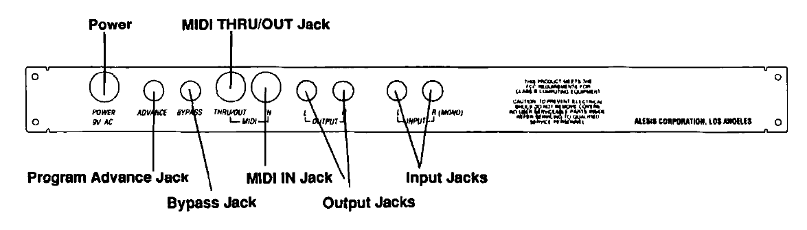
Input Jacks (Left & Right)
Accepts instrument to line level input signals. Use the Right Input Jack for mono (R (MONO)).
Output Jacks (Left & Right)
Stereo output of the QuadraVerb. Use the Right Output Jack for mono.
MIDI IN Jack
Receives all MIDI information.
MIDI THRU/OUT Jack
Retransmits MIDI information received by QuadraVerb to other MIDI units. Used as a MIDI OUT jack for MIDI data dumps.
Bypass Jack
Same function as the front-panel BYPASS button; any momentary switch can be used.
Program Advance Jack
Allows the programs to be advanced remotely from a footswitch. The program numbers to be affected can be selected by the Footswitch Range page of the MIDI button. Any momentary switch can be used.
Power
Accepts 9V AC from the QuadraVerb external power supply. This external supply keeps hum, noise, and ground loops to a minimum.
Section 3 — Interfacing QuadraVerb
With Instruments, Microphones
The Alesis QuadraVerb has high impedance inputs that are ideally suited for use either with instruments or line level signals. Although microphones can be connected directly into the QuadraVerb, it is recommended that for quietest operation they be connected to a mixing console first and then connected to the QuadraVerb as described in Figures 2 or 3.
If a mono output is required, only the Right Output should be used. See Figure 1
FIGURE 1A/1B - MONO CONNECTION TO INSTRUMENT OR MICROPHONE
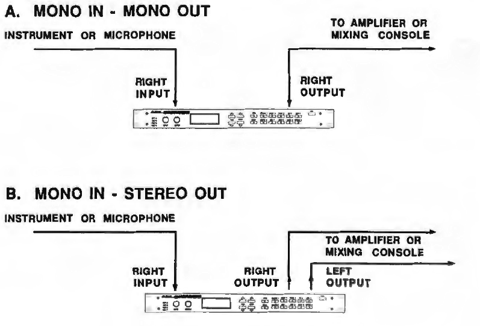
To Mixing Consoles
Interfacing Via Aux Sends
The QuadraVerb handles mono or stereo sends at all system levels. The input circuitry of the QuadraVerb can easily handle +4dBv levels (+20dBv peaks), while having enough input or output gain to interface with the extremely low signal levels of budget recording systems. The QuadraVerb may be connected to the mixing console in several ways. It can be used to effect several instruments at once by using the auxiliary send and return controls of the console. Simply connect an aux send of the mixing console to the Right Input of the QuadraVerb (or 2 aux sends connected to both left and right of the QuadraVerb for stereo) and then connect the output of the QuadraVerb back to either the aux returns or input channels. See Figure 2.
STEREO CONNECTION TO MIXING CONSOLE VIA AUX SENDS
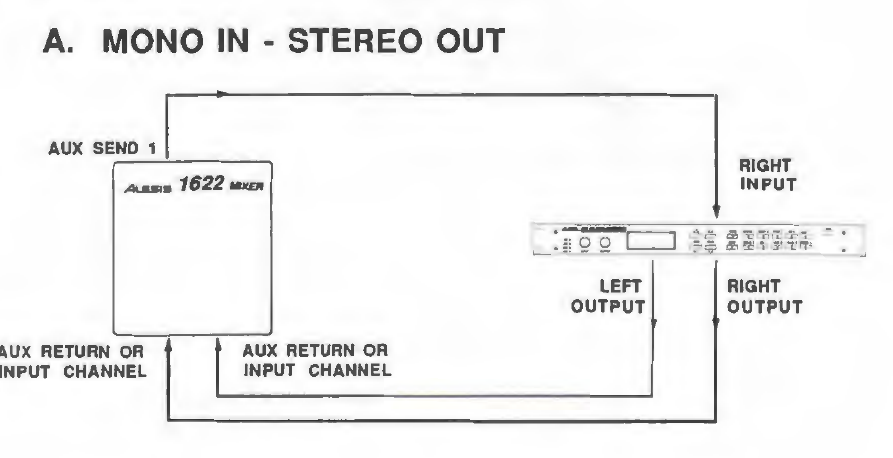
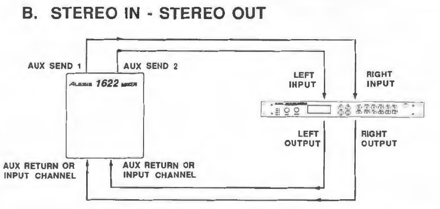
INTERFACING VIA INSERT SEND AND RETURNS
Another method of interfacing is to connect the unit directly to the insert send and return Patch Points of the channel that is to be effected. See Figure 3
CONNECTION TO CONSOLE VIA INSERT PATCH POINTS
FIGURE 3
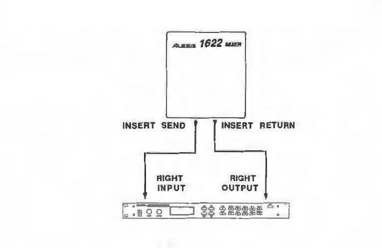
CONNECTION TO THE MAIN OUTPUTS
Still another way of interfacing the QuadraVerb to a mixer or recording console would be in-line across the output of your mixing console. See Figure 4. This setup would be used only if you needed to effect the entire mix.
STEREO CONNECTION TO THE MAIN OUTPUTS OF A MIXING CONSOLE
Setup
After you have properly interfaced your QuadraVerb to either an instrument or mixing console, turn the INPUT LEVEL control up until the Level Indicator LEDs show a -6 dB level (it's OK if the red Clip LED occasionally lights, but distortion will result if it remains on constantly). Now turn the OUTPUT LEVEL control up (clockwise) until there is sufficient level at the amplifier or mixer. Be careful not to turn the OUTPUT LEVEL control up too much as it may cause your amplifier or mixer to overload.
FIGURE 4
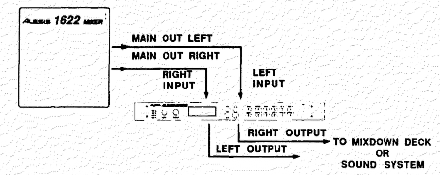
Section 4 — Theory of Operation
What QuadraVerb Can Do
QuadraVerb is an extremely sophisticated digital signal processor which is capable of supplying up to 4 widebandwidth fully digital effects simultaneously. Each effect has a wide variety of types and parameters that are fully programmable. Let's examine each QuadraVerb effect as well as all of their parameters.
REVERB
Reverb can be thought of as a great number of distinct echos, called reflections, that occur so fast that our ear hears them blurred together as one. in nature, different size spaces give distinctly different sounding reverbs, depending upon the size and shape of the space, and the texture of the surfaces that the reflections bounce off of. The various parameters of the QuadraVerb make it possible to simulate nearly any natural reverberant space that can be imagined, and a few artificial ones as well.
Reverb Types
QuadraVerb has five different reverb types, all of which simulate a different space or produce a different effect. They are:
Plate
The Plate program simulates an artificial reverb device known as a Plate. Large and heavy, a Plate was a 6 foot long by 4 foot high piece of steel plate (hence the name) with a small speaker strategically placed on one end, and either 1 or 2 transducers placed on the other to pick up the excitations through the steel. Because it is an electro-mechanical device, a Plate must be isolated from outside vibration and noise and constantly tuned to maintain the integrity of the reverb sound.
In the early days of recording, Plates were extremely popular because they were almost the only way to provide any sort of artificial ambience to a recording The sound of a well-tuned Plate has become quite popular over the years especially when used on vocals or snare drums.
Room
The Room program simulates not only rooms of different sizes, but rooms with different surface material as well A room with soft surfaces such as carpet will produce a reverberant sound with much less high end (treble) than a room with hard surfaces. The Room program of QuadraVerb can easily simulate both examples and many, many more.
Chamber
The Chamber program simulates another way that studios produce artificial reverberation, utilizing a device known as an Acoustic Chamber. The Chamber is a sealed, tiled room with a speaker at one end and a microphone on the other. Any changes in the resulting reverberation came from moving either the speaker or microphone until the desired sound was found. Chambers are not seen much these days since they are difficult to build correctly and take up a great deal of expensive real estate. Still, a great sounding chamber is a thing to behold. Check out any of Phil Spector's "Wall of Sound" recordings, which feature extensive use of the large acoustic chamber at the old Gold Star Studios.
Hall
Much larger than a Room, Halls are characterized by their high ceilings, irregular shapes, and generally uniform density of reflections.
Reverse
The REVERSE program is an inverted reverb program in which the volume envelope is reversed. This means that the signal begins softly but grows louder until it is cut off, rather than loud to soft as in the Gate program. The REVERSE program is extremely programmable and can be used for some great special effects.
Reverb Parameters
Reverb Input 1
There are two inputs to the Reverb section of the QuadraVerb. Reverb Inputs #1 and #2 can have their signal sent from several locations in the signal chain. Reverb Input #1 can select either the Pre-EQ, Post-EQ, Pitch Output, or Delay Mix Input signal. If the signal is taken from the Delay Mix, the Reverb will be sent a composite signal taken from the outputs of the Pitch and EQ sections, as selected by the Delay Input selections (see the next section on Delay). lf the signal is taken from the output of the Pitch section (Pitch Output), then the Reverb will be chorused, flanged, detuned, or phase shifted, depending upon which option is selected in the Pitch section. If the signal is taken from the output of the EQ section (Post-EQ), then the reverb will be equalized. This is ideal to tonally shape the reverb as desired. If the signal is taken Pre-EQ, then the Reverb will receive direct, uneffected signal only.
Reverb Input 2
Reverb Input #2 can have as its source either the Pitch Output or the Delay Output. If the signal is taken from the Delay Output, the Reverb will be delayed by the amount of delay time set for the Delay (plus any Reverb Pre-Delay). If the signal is taken from the output of the Pitch section (Pitch Output), then the Reverb will be chorused, flanged, detuned, or phase shifted, depending upon which option is selected in the Pitch section.
Reverb Input Mix
It is possible to control the balance between Reverb Inputs 1 and 2 and therefore control the blend between the various input sources. This makes it possible to have the signal from the EQ, Pitch, or Delay sections, or the Direct Pre-EQ signal feed Reverb inputs in any combination or amount.
Pre-Delay
Pre-Delay is the slight delaying of the Reverb itself so that the dry signal more easily stands out from the Reverb. A bit of Pre-Delay can sometimes make certain instruments (such as snare drums) sound bigger.
Pre-Delay Mix
The Pre-Delay Mix allows you to mix the amount of PreDelay (the length of Time of the Pre-Delay is controlled by the Pre-Delay page) into the Reverb signal path. This gives you the ability to hear a bit of the Reverb before the loudest part of the Reverb (the Pre-Delayed Reverb) sounds. This makes for bigger and smoother sounding Reverb settings and is a another unique feature of the QuadraVerb.
Reverb Decay
The Reverb Decay determines how long the Reverb will sound before it dies away. When using the REVERSE REVERB type, Reverb Decay will be displayed as REVERB REVERSE TIME.
Reverb Diffusion
As stated previously, Reverb can be thought of as a great number of distinct echos, called reflections, that occur so fast that our ear hears them blurred together as one. Diffusion is the space between these echos. On some Reverb programs of the QuadraVerb, you may actually hear the multiple echos repeating when the diffusion amount is set to 1. As you increase the diffusion amount, you will no longer perceive distinct echos and will observe the Reverb sounding "thicker". Therefore, the Reverb Diffusion Amount can be thought of as control over how thick the reverb will be.
Perhaps the best way of thinking about Diffusion is in the traditional acoustic sense. That is, diffusion is the uniform intensity of sound everywhere in a room. See Figure 5.
FIGURE 5 - REVERB DENSITY
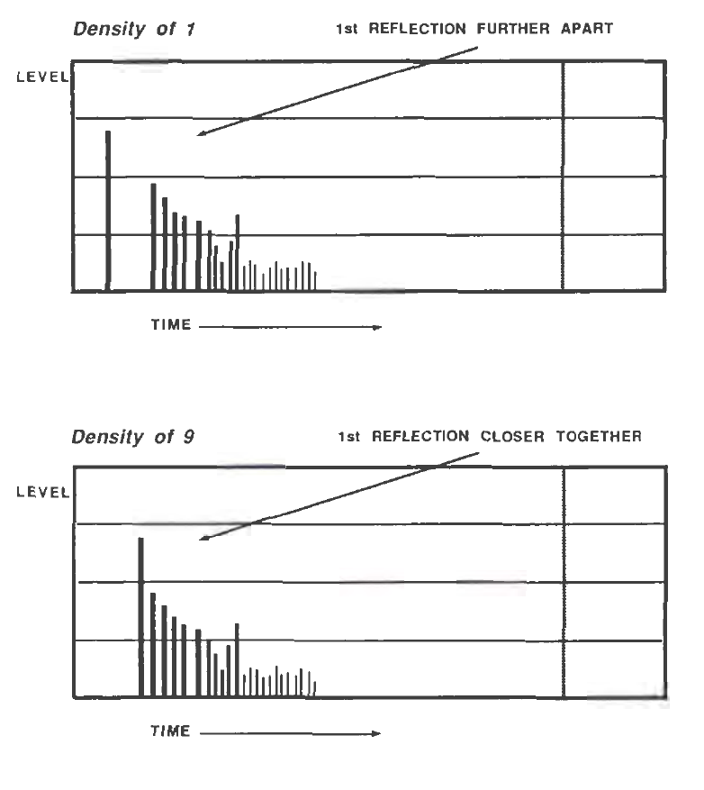
In order to explain exactly what Reverb Density is, we must refer to the previous explanation of Reverb Diffusion. We already know that reverb consists of distinct echos, called reflections that occur so fast that our ears usually can't distinguish them separately. The most important of these, and the loudest, is the First Reflection. Usually, in nature, there is a space of time between the First Reflection and all of the other reflections that make up the reverb sound field. If you listen to only the reverb with the Reverb Density set at 1, you will hear your source sound repeat, a short bit of silence, and then the onset of the reverb. As the Reverb Density is increased, the time between the First Reflection and the remainder of the reverb reflections is decreased to where you can no longer distinguish the first reflection separately. If you listen to the Reverb by itself with the Density set to 9, it will seem to "explode" since the First Reflection will no longer be perceived as a separate echo. This parameter can be quite useful with highly transient source material such as percussion, where the sound can sometimes become confused by the First Reflection seemingly causing an additional "hit". See Figure 6.
FIGURE 6 - REVERB DIFFUSION
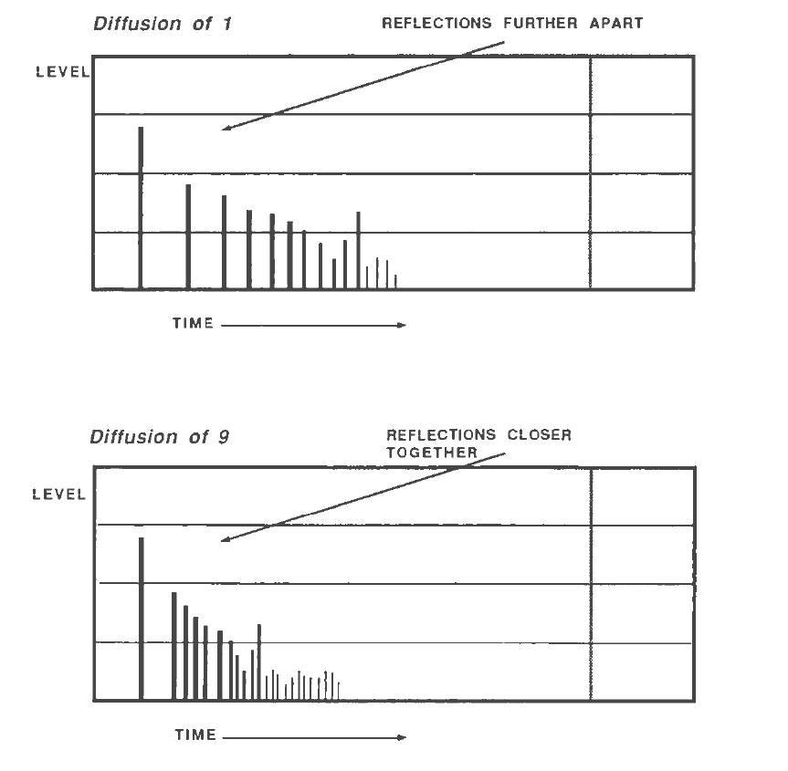
Low Frequency Decay
and
High Frequency Decay
These two parameters allow the decay time to be set separately for both the low and high frequencies of the Reverb. This means that you have control over the tonal shape of the Reverb itself, being able to make the high frequencies die faster if the reverb is too bright,” and being able to make the lows die faster if the reverb is too boomy. This allows you to simulate different surfaces of a room or hall, with softer surfaces having more high frequency decay and smaller rooms having more low frequency decay.
Reverb Gate
Gated Reverb is a very popular effect on drums first found on English records in the early 1980's. The QuadraVerb can simulate applying a noise gate (a device that automatically decreases the volume once the signal falls below a certain level) across the output of the reverb thereby causing the initial attack of the reverb to sound very big, but the tail of the reverb to be cut off very quickly. As the name suggests, a noise gate is sort of an electronic fence gate. When there is enough pressure on the gate (the signal is loud enough), the gate will open to let the signal through. The gate will open when the signal level reaches the -18dB LED, and will close when the signal falls below this point. You can control how much level it will take to open the gate (or how much pressure), how long the gate will stay open, and how fast it will close. Although this effect is not found in nature, it works great for modern drums, percussion, and any quickly repeated, transient source. The Reverb Gate function is turned on or off by this page.
Reverb Gate Hold
The Reverb Gate Hold parameter determines how long that the gate will be held open before it begins to turn off.
Reverb Gate Release
The Reverb Gate Release parameter determines how fast the gate will close.
Reverb Gated Level
The Reverb Gated Level parameter controls the level of the reverb signal after the gate closes. In other words, if the Reverb Gated Level is set to 99% then the no reverb will sound after the gate turns it off. If the Reverb Gated Level is set to , say 50%, then some reverb signal will still be present even after the gate turns off the main reverb signal.
DELAY
Delay Types
The QuadraVerb has three different Delay types available which are outlined below:
Ping Pong Delay
This is called a "Ping Pong Delay” because the output bounces from side to side (left to right) when in stereo with the speed determined by the delay time. The maximum delay time is 400 milliseconds in the QuadMode™ and Leslie Configurations, and 750 milliseconds in the Graphic→Delay and 5 Band EQ→Pitch→ Delay Configurations.
Stereo Delay
The Stereo Delay is actually two separate delays, which can be individually varied. The maximum delay time for each delay is 400 milliseconds in the QuadMode™ and Leslie Configurations, and 750 in the Graphic→Delay, and 5 Band EQ→PITCH→DELAY Configurations.
Mono Delay
The Mono Delay has the advantage of twice the available delay time, or 800 milliseconds in the QuadMode™ and Leslie Configurations, and 1500 in the Graphic→Delay, and 5 Band EQ→PITCH→DELAY Configurations.
Delay Parameters
Delay Input 1
After the Delay Type is selected, the Delay settings may be adjusted. The signal sent to Input 1 of the Delay section may be taken either from the output of the EQ section if an equalized signal is desired, or from before the equalizer.
Delay Input Mix
This parameter allows a mixed signal from either the output of the pitch section or the input of the previous page (Pre or Post EQ) to be applied to the input of the Delay section. This signal can be adjusted so that either the Pre/Post signal or the Pitch output signal only are fed to the input of the Delay section, or any balance of the two.
Delay Time
This parameter determines the amount of time the input signal will be delayed.
Delay Feedback
Delay Feedback means that a portion of the delay signal output is “fed back" into the input. This results in the delay repeating itself. The more feedback, the more repeats.
PITCH CHANGE
The PITCH button allows access to 6 pitch altering modes as well as all of their various parameters. The Pitch Modes available are: Mono Chorus, Stereo Chorus, Mono Flange, Stereo Flange, Pitch Detune, and Phase Shifter. Although some of these effects can sound similar to one another depending on the parameter settings, each is achieved differently and can be quite dramatic under the right circumstances. Pitch effects are achieved by Splitting the signal into at least two parts, effecting the pitch of one of the parts, then mixing them back together. This eventual mixing is essential since the overall sound of the effect is achieved by the actual difference between the normal, uneffected signal and the effected signal. See Figure 7.
FIGURE 7 - BASIC PITCH FLOW CHART
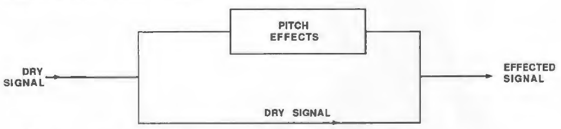
TYPES OF PITCH CHANGE
So that you can better understand the differences between all of the Pitch effects, and therefore better apply them to your music, here is a brief explanation of each.
Chorus
The Chorus effect is achieved by taking part of the signal, slightly delaying it, and then slightly detuning it as well. The detuning is further effected by being modulated by a Low Frequency Oscillator (LFO) which causes the detuning to vary by a set amount. Many variables are available in this scheme. The LFO depth can be varied, the LFO speed can be varied, and a portion of the detuned signal can be fed back to the input to increase the effect. Finally, the waveshape of the LFO can be changed from a smooth triangle, to a more abrupt squarewave to make the pitch detuning more pronounced. See Figure 8.
FIGURE 8 - MONO CHORUS
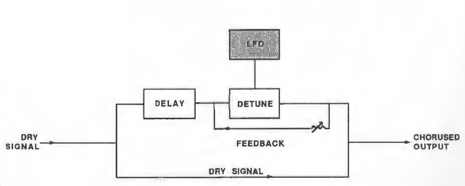
In the case of a Stereo Chorus, the signal is split into three parts with a dry signal and a separate Detuning section for both left and right channels. When the left channel is detuned sharp, the right is detuned flat, and vice versa. Once again, this causes the effect to become more pronounced and dramatic. See Figure 9.
FIGURE 9 - FLANGING
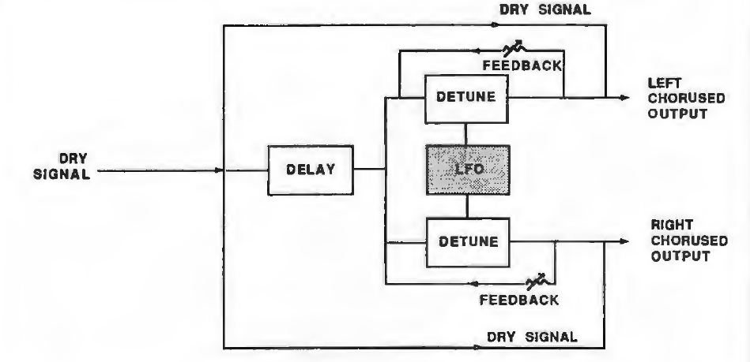
First used in the sixties, "Flanging" was achieved by the use of two tape recorders that would record and play back the same program in synchronization. By alternately slowing down one tape machine, and then the other, different phase cancellations would occur. Since the slowing down of the tape machines was done by hand pressure against the flanges of the tape supply reels, the term “Flanging” came into being.
Today, Flanging can be closely simulated by many Outboard effects processors such as the QuadraVerb. The effect of Flanging, either electronically or mechanically done, is achieved by splitting and slightly delaying one part of the signal, then varying the time delay, again with an LFO. The delayed signal is then mixed back with the original signal to produce the “swishing” or “tunneling” sound. See Figure 10.
FIGURE 10 - MONO FLANGE
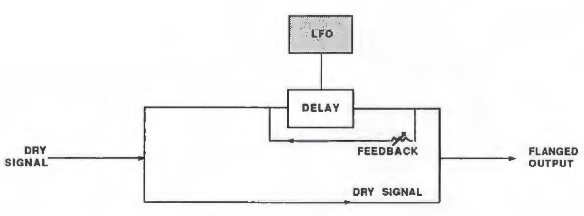
Many variables are available, from varying the speed and depth of the LFO to feeding back part of the signal to make the effect stronger.
It is also possible to "trigger" the flange. This means that the delay time is reset to zero whenever the input signal passes a certain volume threshold. Triggering always starts the oscillator at the top of its cycle and produces a deep super flange controlled by the level of the input signal.
In the case of a Stereo Flange, the signal is split into three parts with a dry signal and a separate Delay section for both left and right channels with one channel flanging up while the other channel flanges down. Once again, this causes the effect to become more pronounced and dramatic. See Figure 11.
FIGURE 11 - STEREO FLANGE
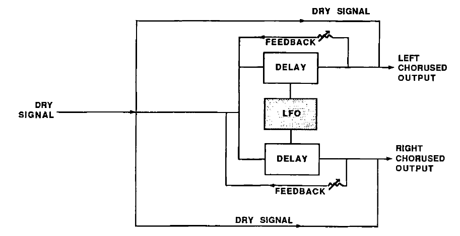
PITCH DETUNE
As the name implies, Pitch Detune takes a part of the signal and detunes it either sharp or flat. When mixed back with the original dry signal, the popular "12 string” effect is produced. See Figure 12.
FIGURE 12 - PITCH DETUNE
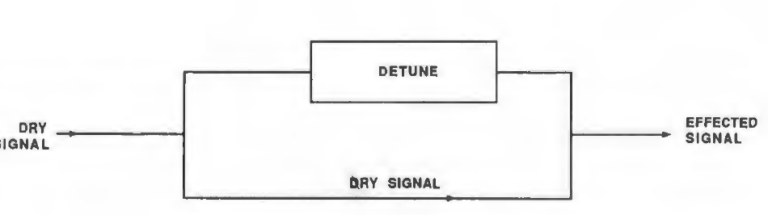
PHASE SHIFTER
Another popular effect is the Phase Shifter. Although similar in sound to Flanging, this effect is produced differently. Again, part of the signal is split from the original signal. The Phase Shifter shifts the phase of different frequencies in different amounts, resulting in a comb filter effect when combined with the dry signal. See Figure 13.
FIGURE 13 - PHASE SHIFTER
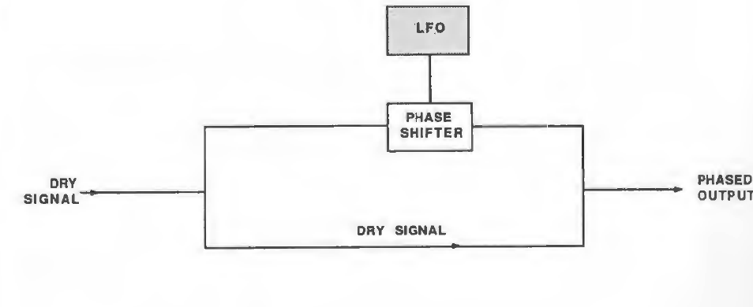
PITCH PARAMETERS
Pitch Input
Selects the input to the Pitch section from either before or after the EQ section.
LFO Waveshape
This parameter only appears when the Mono or Stereo Chorus types are selected. The Waveshape of the Low Frequency Oscillator (LFO) can be changed from a triangle waveform, which provides a smoother, more even sound, to a square wave, which makes the Chorus effect more pronounced.
LFO Speed
The LFO Speed of all Pitch effects except Detuning can be adjusted to produce the desired effect.
LFO Depth
The LFO Depth, which is the amount of pitch alteration, can be adjusted to produce the desired effect. It is not available when the Detune type is selected.
Pitch Feedback
A portion of the output of the Pitch section can be "fed back" into the input in order to make the effect more tonal or pronounced. This parameter is not available in the Pitch Detune or Phase Shifter mode.
Trigger Flange
This parameter selects the triggering function, which means that the Flange resets to the top of its modulation cycle whenever an input signal exceeds a_ preset threshold. This page appears only when Mono or Stereo Flange is selected.
Detune Amount
This parameter controls the amount of Detuning performed by the QuadraVerb. A negative number means the the Detuning is flat; a positive number means that the Detuning is sharp.
Leslie Stereo
Separation
In the Leslie Configuration, the Pitch section will display a different set of parameters, which are those of the Leslie speaker simulator. (See the Leslie Configuration for more information). The Leslie Stereo Separation page determines the spread of bass and treble across the stereo image.
Leslie Motor Control
The Leslie Motor Control page selects a simulation of a Leslie speaker system with its spinning rotor speakers turned off or on.
Leslie Speed
The Leslie Speed parameter page selects a simulation of the two rotating speeds of the Leslie speaker.
The EQ
The EQ section of the QuadraVerb provides a choice of 3 different types of EQ, which is selected by the configuration.
Equalization, or EQ, is the ability to control the harmonic balance, or timbre, of an instrument, and can be used to compensate for frequency deficiencies in either microphones or sound equipment. There are three different categories of equalizers, all of which you are probably familiar with.
The most common type of equalizer is the Shelving type. This is the simple bass and/or treble control normally found on stereo systems, guitar amplifiers, and the like. These are called shelving because the maximum boost or cut is at its maximum (usually 100hz for the bass and 10Khz for treble) and maintains this maximum amplitude "shelf" or plateau on all frequencies from this point (called the “turnover") to beyond the range of audibility. The frequencies below the turnover point of the shelf are also affected, but less and less so the further away from the turnover point. See Figure 14.
FIGURE 14 - SHELVING EQUALIZER
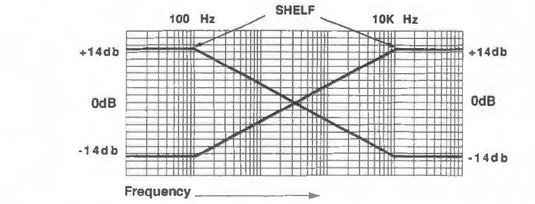
The second type of equalizer is the Graphic Equalizer: which most people have seen on sound systems, some home stereos, and many guitar type amplifiers. This device gets its name from the fact that the control settings actually form a graph of the frequency spectrum. While shelving equalizers work on broad sections of the frequency bandwidth, a graphic equalizer is slightly more sophisticated than the Shelving equalizer as it divides the frequency spectrum into sections called bands. See Figure 15.
FIGURE 15 - GRAPHIC EQUALIZER
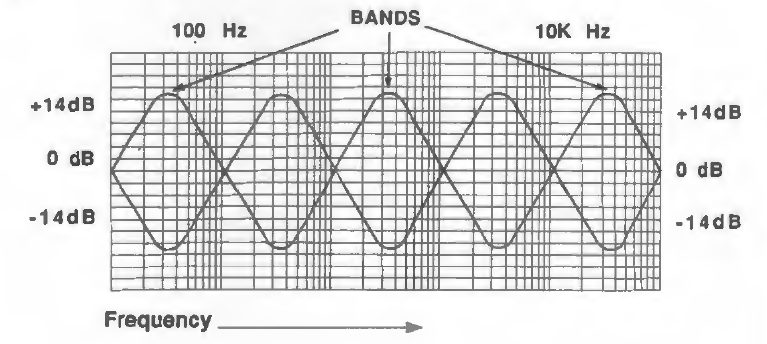
The number of frequencies acted upon in each band is called the bandwidth. This bandwidth is normally measured in musical octaves, so on a simple graphic equalizer containing only 5 bands, each band would have a 2 octave bandwidth, and a more sophisticated graphic equalizer with 31 bands would have a 1/3rd octave equalizer.
Generally speaking, a 1/3rd octave equalizer is normally used for room tuning and feedback control while a 1 or 2 octave equalizer is used for normal tonal shaping. See Figure 16.
FIGURE 16 - EQUALIZER BANDWIDTH
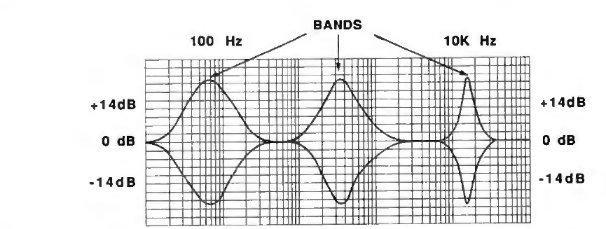
EQ TYPES IN THE QuadraVerb
By far the most versatile equalizer is the parametric type. While the graphic EQ always has a bandwidth that is fixed, the parametric allows for the bandwidth to be varied. This means that far fewer equalizer sections are required for either tonal shaping or feedback suppression since the exact offending frequencies can be dialed in.
3 Band Parametric
The 3 Band Parametric EQ is selected in the QuadMode™ and the 3 BAND EQ→REVERB Configurations. In this equalizer setup, the high and low bands are shelving type equalizers, while the mid band is fully parametric with not only the frequency but bandwidth fully adjustable.
This setup provides the best of both worlds of a shelving and parametric EQ in terms of sound and ease of use.
5 Band Parametric
The 5 Band Parametric EQ is selected in the Band→PITCH→DELAY Configuration. In this equalizer setup, the high and low bands are shelving type equalizers, while the 3 mid bands are fully parametric with not only the frequency but bandwidth full adjustable. As with the 3 Band EQ, this setup provides the best of both worlds of a shelving and parametric EQ in terms of sound and ease of use.
11 BAND GRAPHIC
The 11 Band Graphic EQ is available in the GRAPHIC EQ→DELAY Configuration. The display resembles the actual frequency graph the same as a graphic equalizer. The octaves that are displayed are:
16Hz, 32Hz, 62Hz, 126Hz, 250Hz, 500Hz, 1KHz, 2KHz, 4KHz, 8KHz, and 16KHz
EQ PARAMETERS
- Low EQ Frequency, Low Mid Frequency, Mid Frequency, High Mid Frequency, High Frequency
- These parameters will change the EQ frequency in their related bands in 1Hz steps.
- Low EQ Amplitude, Low Mid Amplitude, Mid Amplitude, High Mid Amplitude, High Amplitude
- These parameters will change the EQ amplitude of the displayed frequency in their related bands in .05dB steps.
- Low Mid Bandwidth, Mid Bandwidth, High Mid Bandwidth
- These parameters will change the EQ Bandwidth at the displayed frequency of their related bands in .01 octave steps.
Graphic
This parameter resembles the actual frequency graph the same as a graphic equalizer. The octaves that are adjustable are:
16Hz, 32Hz, 62Hz, 126Hz, 250Hz, 500Hz, 1KHz, 2KHz, 4KHz, 8KHz, and 16KHz
High Rotor Level
This parameter is only available in the Leslie Configuration. A Leslie speaker system has two rotating rotor speakers. Sometimes it is desirable to adjust High (treble) Rotor Level. The range of adjustment is -20 to +6dB.
THE MIX SECTION
The QuadraVerb has an on-board digital mixer which allows all of the Effects to be mixed together into either a mono or stereo output. What's more, all signal levels of the Mix section are memorized and stored with the program. Below is a simple block diagram of the Mix section. See Figure 17.
FIGURE 17 - QuadraVerb Mix Section
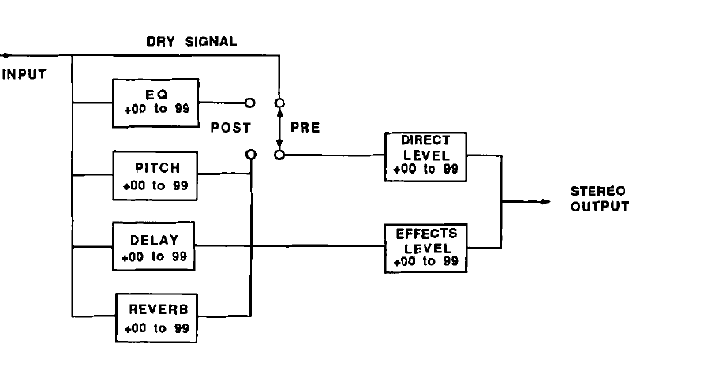
Direct Signal Select
This parameter selects whether the Direct Signal will be taken from before the EQ or after the EQ.
Direct Signal Level
This parameter is only available if the Direct Signal Select is in the "Pre" position. When the Direct Signal is switched to "Post" EQ, then the Direct Signal Level is adjusted on the EQ Output Level page.
Master Effects Level
The Master Effects Level adjusts the overall level of all of the Effects.
EQ Output Level
The EQ Output Level adjusts the output level of the EQ section.
Pitch Output Level
The Pitch Output Level adjusts the output level of the Pitch section.
Delay Output Level
The Delay Output Level adjusts the output level of the Delay section.
Reverb Output Level
The Reverb Output Level adjusts the output level of the Reverb section.
Leslie Output Level
Available in only the Leslie Configuration, the Leslie Output Level adjusts the level of the Leslie simulation.
Modulating QuadraVerb’s Parameters
The MOD section lets you control various QuadraVerb parameters from a MIDI controller such as the pitchwheel, aftertouch, or any other desired controller on a synthesizer or other MIDI device. This is extremely useful when dynamic or real-time control is required in a live playing situation. It is possible to control up to 8 parameters simultaneously from 1 to 8 MIDI controllers . All mod assignments can be stored to their programs.
MOD PARAMETERS
Mod Source
The Mod Source parameter selects the MIDI controller which will remotely cause a change (modulate) in one or several of the parameters of the QuadraVerb. Nearly every MIDI controller can become a Mod Source, with the most common controllers appearing as a direct option in the display. The options for the Mod Source are:
- Pitch Bend
- The pitch bend wheel or lever common on most synthesizers.
- After Touch
- After a note is depressed, pressure on the key will cause a MIDI command. This ability is not available on all keyboards.
- Note Number
- Any MIDI note. from. keyboard, sequencer, or drum machine.
- Note Velocity
- The target parameter will change in relation to how hard a key is struck.
- Controller #XXX
- There can be anywhere from 0 to 127 MIDI controllers, any of which can be assigned as a Mod Source. For example, #1 would be a modulation wheel on a synthesizer while #64 would be the sustain pedal. (See Controller Number Chart in Appendix.)
Mod Target
The MOD 1 TARGET is the desired parameter that will be controlled by the selected MOD 1 SOURCE. Other targets can also be selected by pressing the VALUE button until the desired parameter is displayed. The possible target parameters in the QuadMode™ Configuration are as follows:
| Reverb Input Mix | Reverb PreDelay | Reverb PreDelay Mix |
| Reverb Decay | Reverb Diffusion | Reverb Density |
| Reverb Low Decay | Reverb High Decay | Delay Input Mix |
| Delay Time | Delay Feedback | LFO Speed |
| LFO Depth | Pitch Feedback | Low EQ Frequency |
| Low EQ Amplitude | Mid EQ Frequency | Mid EQ Bandwidth |
| Mid EQ Amplitude | Hi EQ Frequency | Hi EQ Amplitude |
| Direct Mix Level | Effect Mix Level | EQ Mix Level |
| Pitch Mix Level | Delay Mix Level | Reverb Mix Level |
In addition to many of the above targets, the following parameters are available in the Leslie Configuration:
| Leslie Stereo | Leslie Motor | Leslie Speed |
| Leslie Hi Level | Leslie Mix Level |
In addition to many of the targets available in QuadMode™ Configuration, the following parameters are available in the Graphic Configuration:
| 16Hz Boost/Cut | 32Hz Boost/Cut | 62Hz Boost/Cut |
| 126Hz Boost/Cut | 250Hz Boost/Cut | 500Hz Boost/Cut |
| 1KHz Boost/Cut | 2KHz Boost/Cut | 4KHz Boost/Cut |
| 8KHz Boost/Cut | 16KHz Boost/Cut |
In addition to many of the targets available in QuadMode™ Configuration, the following parameters are available in the 5 Band Configuration:
| Low Mid EQ Frequency | Low Mid EQ Bandwidth | Low Mid EQ Amplitude |
| High Mid EQ Frequency | High Mid EQ Bandwidth | High Mid EQ Amplitude |
Mod Amplitude
The Mod Amplitude is the amount that the Target parameter will be affected by the Mod Source. It can be adjusted to affect the Target parameter by a positive or negative amount. In other words, if the Reverb Decay was selected as the Target with the pitch wheel of a keyboard as the Source, the pitch wheel could be programmed to cause the Reverb to increase the decay (positive) or decrease its decay (negative).
QUADRAVERB’S MIDI SECTION
The MIDI button accesses the various MIDI parameters of QuadraVerb. The MIDI functions are global functions and are not stored with an individual program.
MIDI Parameters
MIDI Channel
The QuadraVerb can receive MIDI information on channels 1 through 16, or Omni mode. Omni mode responds to MIDI commands received on all channels simultaneously, and transmits on channel 1.
MIDI Program Change
The MIDI Program Change page allows the QuadraVerb to change programs remotely by a MIDI Program Change command if the "ON" option is selected. The QuadraVerb will also send Program Change commands when programs are selected from the front panel. If the "TABLE" option is selected, the QuadraVerb transposes the program numbers of a MIDI controller (a synthesizer, for instance) to match those of the QuadraVerb.
Program Table
The value of the Program Table is that it makes it possible to transpose any MIDI controller program numbers to select the desired QuadraVerb program numbers for easy program changes. Also, because QuadraVerb has 100 program locations, but there are 127 MIDI program change numbers, the Program Table makes it possible to make use of all 127 program change numbers. For example, if the following program changes were desired:
MIDI Controller Program 101 = QuadraVerb Program 33
MIDI Controller Program 102 = QuadraVerb Program 39
MIDI Controller Program 103 = QuadraVerb Program 25
Selecting program 101 on the MIDI controller would result in program 33 of the QuadraVerb being accessed, selecting program 102 would result in program 39 of the QuadraVerb being accessed, and selecting program 103 would result in program 25 of the QuadraVerb being accessed.
MIDI Thru
MIDI Thru means that any MIDI information received by QuadraVerb (with the exception of System Exclusive data) will be re-transmitted back out the MIDI THRU/OUT jack.
System Exclusive
System Exclusive is a distinct software protocol specific to the QuadraVerb, This makes it possible to do such things as MIDI Data Dumps and retrievals, and communication via external computer.
Send MIDI Program
Send MIDI Program makes it possible to save either a single or all QuadraVerb programs externally to a MIDI storage device, or swap programs with another QuadraVerb.
Program Advance Footswitch Range
The Footswitch Range page selects the range of programs that the ADVANCE FOOTSWITCH on the back panel will affect. Therefore, if only a limited number of programs are to be used, for instance programs 49 through 53, the programs will continuously cycle from 49 to 53 whenever the ADVANCE FOOTSWITCH is triggered. If the range goes downward (i.e., 53 to 49), the footswitch will step backwards.
CONFIGURATIONS
At the heart of QuadraVerb's unique sophistication are its multiple configurations. A configuration is the order in which the internal digital Effects are placed. QuadraVerb's configurations are not just the placement of the Effects in simple series or parallel fashion, however. It is possible in each mode (configuration) to further adjust the signal path through a series of internal digital software switches and level controls. This allows many effects and sounds to become quickly and easily possible where previously it would have taken many expensive, external devices, lots of patching, and a few hours time to duplicate those same sounds.
QuadraVerb also has several special effect configurations, such as the Leslie and Graphic EQ, in which one or more of the internal Effects becomes substantially altered to perform a specialized application.
Let's look at the individual configurations more closely.
CONFIGURATION 1 - QuadMode™ (EQ→PITCH→DELAY→Reverb)
The most sophisticated of the configurations, QuadMode™ allows all four effects to be used simultaneously in various signal flow combinations. What's more, each effect suffers no operational or sonic degradation, and is capable of full 20Hz to 20KHz bandwidth.
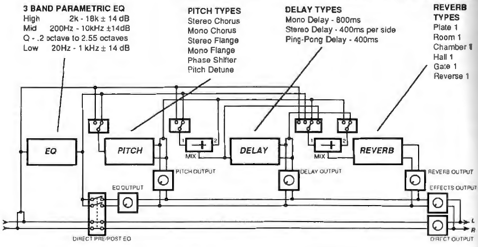
CONFIGURATION 2 - Leslie → Delay → Reverb
Leslie→Delay→Reverb This mode simulates the unique effect of the famous Leslie speaker system. This system uses 2 rotating speakers to produce a combination of both frequency and amplitude modulated sound. The Leslie speaker system is most often used with Hammond type organs, but is occasionally used for guitar amplification as well. This QuadraVerb configuration gives a close approximation of a miked Leslie cabinet in stereo, complete with 3 different speeds (Off, Slow, Fast) and variable stereo separation.
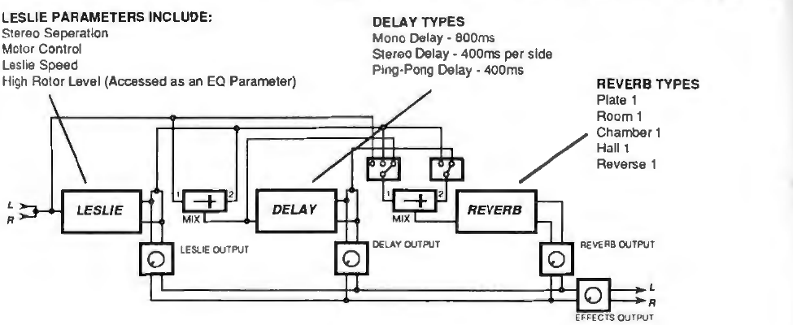
CONFIGURATION 3 - Graphic EQ → Delay
Another specialized configuration, this mode combines an 11 band Graphic EQ with a full function Delay.
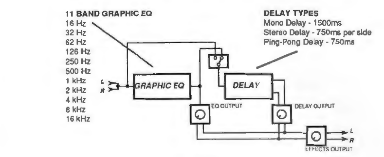
CONFIGURATION 4 - 5 Band EQ→PITCH→DELAY
Perfect for guitar players who need extra EQ facilities and no Reverb, this configuration utilizes a 5 Band Parametric EQ as well as the full function Pitch and Delay sections.
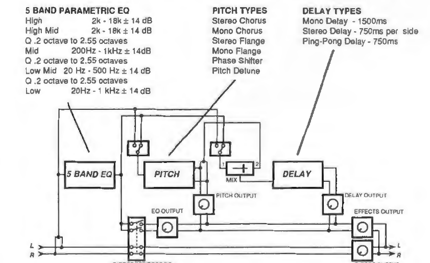
CONFIGURATION 5 - 3 Band EQ→Reverb
This mode is the configuration of choice when Reverb is to be the primary effect. This is because the Reverb in this configuration takes advantage of the increased processing power available (since only two Effects are active) and operates in an enhanced mode. Not only is the 3 Band Parametric EQ present for tonal shaping, but a Chorus function is also available in the Pitch section for additional Reverb effect.
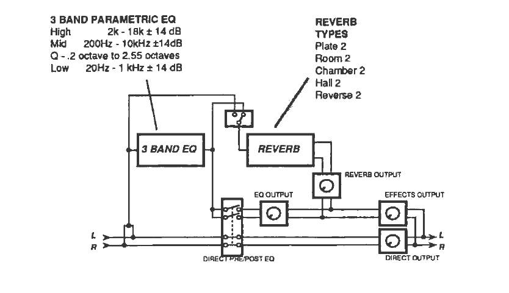
Section 5 — Using QuadraVerb
Changing Programs
Pressing the PROGRAM button will display the name and number of the current program. Different programs can be accessed in this mode by pressing one of the VALUE buttons, which will increment or decrement the programs until the desired program is accessed. Programs may also be accessed by holding down the PROGRAM button and entering the desired program number with the mode buttons (Note the numbers beside the button designations).
When a program is first accessed, it will be displayed as follows:
| PROGRAM 85 |
| "DEMO CONFIG 1" |
Once a program has been edited, a period will appear behind the program number as below:
| PROGRAM 85. |
| "DEMO CONFIG 1" |
Storing a Program
The STORE button allows you to store an edited program, or recall a factory program, in an available program location. When the STORE button is pressed once, the display will read:
| STORE PROGRAM AT |
| LOCATION: 85 |
The desired location can now be accessed by pressing and holding either VALUE button.
Pressing the “up" PAGE button will access a second page that will read:
| RECALL ALESIS |
| PROG 00 INTO 99 |
This page will recall the Alesis Factory program from the desired location. Even though an edited program can be stored in any location, it will always be possible to recall the factory program in this manner. The factory program is never really erased, even though it might not be displayed.
The desired location can now be accessed by pressing and holding either VALUE button.
Pressing the “up" PAGE button will move the cursor to the target location so that the display will read:
| RECALL ALESIS |
| PROG 00 INTO 99 |
The desired location can now be accessed by pressing and holding either VALUE button.
Pressing the “up” PAGE button will access the next page which will read:
| RECALL ALL 90 |
| ALESIS PROGRAMS |
This will allow all 90 Alesis Factory programs to be recalled. Programs 90 to 99 will remain unchanged. Any edited programs from 00 to 99 will be deleted. In any of the above selections, pressing the STORE button a second time will now save the program at the desired location, and yield a brief 2 second prompt which says:
| PROGRAM STORED |
The display will then return to the one previously shown before the store was initiated.
Comparing Programs
The Compare function makes it possible to quickly switch back and forth between the program being edited and one that is currently stored in the QuadraVerb’s memory to instantly hear the difference.
To enter the Compare function, press the PROGRAM button any time during editing. The display will read:
| PROGRAM 85. |
| "DEMO CONFIG 4 " |
Now press the "up" PAGE button. The display will read:
| PROGRAM 85 |
| * COMPARING * |
Press any button to re-enter the edit mode. Repeat the above steps to Compare at any time.
Editing Programs
Each QuadraVerb program has numerous routing possibilities for the 4 effects, and each effect has a variety of categories and parameters which can be adjusted and stored as desired. An Effect (like Delay, for instance) or a function (like Mix) can be easily modified through the use of software pages, which allow a tremendous number of parameters to become available for editing in an easy to use, orderly fashion.
To edit you need only to press an Effect. or function button, press the PAGE button until the desired selection or parameter is displayed, then press a VALUE button to either select the desired choice or amount.
To help you get the most from your QuadraVerb , the following is a description of every page of the QuadraVerb in the order that they appear. An explanation, or reference to an explanation, for all functions or parameters is also given. Each page display example is the default setting to one of these programs. At any time it is possible to return to the factory default by pressing both VALUE buttons at the same time.
Selecting Configurations
There are 5 Effect Configurations in the QuadraVerb. As explained in Section 4, a Configuration is the physical order in which the effects are placed. Also, in some configurations, certain effects are enhanced for special use while other effects are disabled.
The CONFIG button selects the various signal flow possibilities of QuadraVerb's four effects. CONFIG will display the actual order of the Effects, and any special effects modes.
Factory Programs 85 through 89 are demo programs that are used to feature each different configuration. All pages of the page display examples are referenced to one of these programs. At any time it is possible to return to the factory default by pressing both VALUE buttons at the same time.
CONFIGURATION 1 - QuadMode™ (EQ→PITCH→DELAY→Reverb)
After pressing the CONFIG button, pressing the VALUE buttons will select the available choices. The first display will read:
| CONFIGURATION: |
| EQ→PCH→DL→REVERB |
This configuration displays the signal being sent through the EQ first, to the Pitch Change section, to the Delay section, and finally through the Reverb.
EDITING THE REVERB
Reverb Type
The REVERB button allows access to the various reverb types and parameters. After pressing REVERB, the display will read:
| REVERB TYPE: |
| HALL 1 |
By pressing the VALUE buttons, the various types of reverbs can now be accessed. These will be shown as:
| REVERB TYPE: |
| PLATE 1 |
| REVERB TYPE: |
| ROOM 1 |
| REVERB TYPE: |
| CHAMBER 1 |
| REVERB TYPE: |
| REVERSE 1 |
Reverb Input 1
After the Reverb Type has been selected, it is now possible to selected any of the various reverb parameters for editing. This is done by pressing the PAGE button which will cause the display to read one of the following:
| REVERB INPUT 1: |
| DELAY MIX INPUT |
| REVERB INPUT 1: |
| PITCH OUTPUT |
| REVERB INPUT 1: |
| POST-EQ |
| REVERB INPUT 1: |
| PRE-EQ |
Any of these options can be selected by again depressing the VALUE button. During editing, the original value or selection stored with a program can be returned simply by pressing both Value buttons at the same time.
There are two inputs to the Reverb section of the QuadraVerb. This page determines where the signal to Reverb Input #1 will come from. If the signal is taken from the Delay Mix, the Reverb will be sent a composite signal taken from the outputs of the Pitch and EQ sections, as selected by the Delay Input selections. If the signal is taken from the output of the Pitch section (Pitch Output), then the Reverb will be chorused, flanged, detuned, or phase shifted, depending upon which option is selected in the Pitch section. If the signal is taken from the output of the EQ section (Post-EQ), then the reverb will be equalized. This is ideal to tonally shape the reverb as desired. If the signal is taken Pre-EQ, then the Reverb will receive direct, unaffected signal only.
Reverb Input 2
The next page will gain access to the 2nd of the two inputs to the Reverb section. Depending upon the program, either of the following displays will be shown:
| REVERB INPUT 2: |
| PITCH OUTPUT |
| REVERB INPUT 2: |
| DELAY OUTPUT |
Once again, this will enable the Reverb to receive either a delayed signal, or a pitch shifted signal, or a combination as determined by the next page.
Reverb Input Mix
The next page is the Reverb Input Mix which determines the balance between the 2 inputs. When accessed, the display will read:
| REVERB INPUT MIX |
| 1 ←60 2 |
This display indicates that 60% of the input signal is being sent to Input 1, as indicated by the arrow. By now pressing either VALUE button, the relative level (or balance) can be varied. If only one input is desired, the display will read as follows after the VALUE button is held until it stops.
| REVERB INPUT MIX |
| 1 ←99 2 |
| REVERB INPUT MIX |
| 1 99→ 2 |
Reverb Pre-Delay
The next page is Reverb Pre-Delay. Pre-Delay is the slight delaying of the Reverb itself so that the dry signal stands out from the Reverb more easily. A bit of Pre-Delay can sometimes make certain instruments (such as snare drums) sound bigger. This display will read as follows:
| REVERB PREDELAY: |
| 080 milliseconds |
Once again, by pressing either VALUE button, the desired amount of Pre-Delay can be selected.
Reverb Pre-Delay Mix
The following page is Pre-Delay Mix. This feature allows you to mix the amount of Pre-Delay (the length of Time of the Pre-Delay is on the previous page) into the Reverb signal path. This gives you the ability to hear a bit of the Reverb before the loudest part of the Reverb (the Pre-Delayed Reverb) sounds. This makes for bigger and smoother sounding Reverb settings and is an exclusive feature of the QuadraVerb. The display will read as follows:
| PREDELAY MIX: |
| PRE 80→ POST |
| PREDELAY MIX: |
| PRE ←99 POST |
| PREDELAY MIX: |
| PRE 99→ POST |
Reverb Decay
The next page is Reverb Decay. This will determine how long the Reverb will sound before it dies out. The display will show:
| REVERB DECAY: |
| 20 |
By pressing/holding either VALUE button, the overall Reverb Decay time can be selected as desired. When using the REVERSE REVERB type, Reverb Decay will be displayed as REVERB REVERSE TIME.
Reverb Diffusion
The following page is entitled Reverb Diffusion. The display will read:
| REVERB DIFFUSION |
| AMOUNT: 8 |
By pressing either VALUE button, the amount of Reverb Diffusion can be selected as desired. The range is 1 to 9.
Reverb Density
Some reverb types will include the Reverb Density page which will be displayed as follows:
| REVERB DENSITY: |
| 1 |
By pressing either VALUE button, the amount of Reverb Density can be selected as desired. (For more about these parameters and their effect on the reverb, refer to the Theory of Operation section.) The range is 1-9.
Hi & Low Frequency Decay
The following two pages allow you to set the decay time separately for both the low and high frequencies of the Reverb. The next page will read as follows:
| LOW FREQUENCY |
| DECAY: -60 |
By pressing either VALUE button, the amount of Low Frequency Decay can be selected as desired. The amount will always be in a negative direction since the overall decay time is selected by the Reverb Decay page.
Pressing the PAGE button will cause the display to read:
| HIGH FREQUENCY |
| DECAY: -40 |
By pressing either VALUE button, the amount of High Frequency Decay can be selected as desired. The amount will always be in a negative direction since the overall decay time is selected by the Reverb Decay page.
Reverb Gate
The Reverb Gate function will cause the reverb tail to be abruptly cut off by utilizing the software equivalent of a noise gate (see THEORY OF OPERATION for a complete explanation). Pressing the PAGE button will cause the display to read either of the following:
| REVERB GATE: |
| OFF |
| REVERB GATE: |
| ON |
Pressing the VALUE button will cause the Reverb Gate to toggle ON or OFF.
Reverb Gate Hold
Pressing the PAGE button again will display the next page which will read:
| REVERB GATE |
| HOLD TIME: 90 |
Pressing the VALUE button will select how long that the Reverb Gate stays open (see THEORY OF OPERATION for complete explanation).
Reverb Gate Release
Pressing the PAGE button again will display the next page which will read:
| REVERB GATE |
| RELEASE TIME: 90 |
Pressing the up or down VALUE buttons will select the length of time that it takes the Reverb Gate to close (see THEORY OF OPERATION for complete explanation).
Reverb Gated Level
Pressing the PAGE button again will display the last Reverb page which will read:
| REVERB GATED |
| LEVEL: 00% |
Pressing the VALUE button will determine how low in level that the Reverb Gate falls to (see THEORY OF OPERATION for complete explanation).
EDITING THE DELAY
Delay Types
The DELAY button allows access to the three Delay types as well as all of their parameters. The display will default to the following when the DELAY button is pressed:
| DELAY TYPE: |
| PING PONG DELAY |
This is called a "Ping Pong Delay" because the output bounces from side to side (left to right) when in stereo with the speed determined by the delay time. The maximum delay time is 400 milliseconds in the QuadMode™ Configuration.
If the VALUE button is pressed, two additional delay types can be selected. They are:
| DELAY TYPE: |
| STEREO DELAY |
| DELAY TYPE: |
| MONO DELAY |
The Stereo Delay is actually two separate delays, which can be individually varied. The maximum delay time for each delay is 400 milliseconds in the QuadMode™ Configuration. The Mono Delay has the advantage of twice the available delay time, or 800 milliseconds in the QuadMode™ Configuration.
Delay Input 1
After the Delay Type is selected, the Delay settings may be adjusted. These are accessed by pressing the PAGE button. The first page will read either of the following, depending on the program selected:
| DELAY INPUT 1: |
| POST EQ |
| DELAY INPUT 1: |
| PRE-EQ |
This means that the signal sent to Input 1 of the Delay section may be taken either from the output of the EQ section, if an equalized signal is desired, or from before the equalizer.
By pressing either VALUE button will select one of the two selections.
Delay Input Mix
The next page is the Delay Input Mix which is displayed, as:
| DELAY INPUT MIX: |
| 1 ←00→ PITCH |
This page allows a mixed signal from either the output of the pitch section or the input of the previous page (Pre or Post EQ) to be applied to the input of the Delay section. This signal can be adjusted so that either the Pre/Post signal or the Pitch output signal only are fed to the input of the Delay section, or any balance of the two.
By pressing either VALUE button, the balance can be adjusted between inputs 1 and 2. The display will appear as follows if the input is adjusted fully to either Input 1 or Pitch output:
| DELAY INPUT MIX: |
| 1 99→ PITCH |
| DELAY INPUT MIX: |
| 1 ←99 PITCH |
Delay Time
Press the PAGE button. The next page is the Delay Time page. By pressing/holding the VALUE buttons, the Delay Time can be precisely adjusted in 1 millisecond increments. The display will read:
| DELAY TIME: |
| 300 milliseconds |
Delay Feedback
Press the PAGE button. The next page is the Delay Feedback page. Delay Feedback means that a portion of the delay signal output is "fed back" into the input. This results in the delay repeating itself. The more feedback, the more repeats. The display will read:
| DELAY FEEDBACK: |
| 40% |
Below is a chart of the approximate number of audible repeats and their corresponding Delay Feedback percentages:
| DELAY FEEDBACK | REPEATS |
|---|---|
| 0 to 4% | 1 |
| 4 to 8% | 2 |
| 9 to 18% | 3 |
| 19 to 28% | 4 |
| 29 to 34% | 5 |
| 35 to 42% | 6 |
| 43 to 54% | 7 |
| 55% | 8 |
| 66% | 9 |
| 77% | 10 |
| 88% | 11 |
| 99% | Infinite Repeat |
For the Stereo Delay type, there are two additional pages and the previous two pages, Delay Time and Delay Feedback are slightly different. In this case they will read:
| LEFT DELAY TIME: |
| 300 milliseconds |
| DELAY FEEDBACK |
| LEFT: 40% |
The two additional pages will be for the Right Delay Time and Delay Feedback and will read:
| RIGHT DELAY TIME: |
| 300 milliseconds |
| DELAY FEEDBACK |
| RIGHT: 40% |
Once again, by pressing either VALUE button, the amount of either Delay Time or Delay Feedback can be selected as desired.
EDITING PITCH
Pitch Mode
in order to access the various Pitch Modes, press the PITCH button. The display will read:
| PITCH MODE: |
| STEREO CHORUS |
By pressing the VALUE buttons, the other modes can be accessed. These will be shown as:
| PITCH MODE: |
| MONO CHORUS |
| PITCH MODE: |
| MONO FLANGE |
| PITCH MODE: |
| STEREO FLANGE |
| PITCH MODE: |
| PITCH DETUNE |
| PITCH MODE: |
| PHASE SHIFTER |
Since each of these Pitch Modes have a few parameters that are not common to the other modes, we will discuss each mode individually. (Also see Section 4.)
EDITING MONO CHORUS and STEREO CHORUS
Pitch Input
The first page of either the Mono or Stereo Chorus Mode is the Pitch Input page. This is accessed by pressing the PAGE button, which will read either:
| PITCH INPUT: |
| PRE-EQ |
| PITCH INPUT: |
| POST-EQ |
This page allows an for an equalized signal to be sent to the Pitch Section if desired. Pressing the VALUE button will toggle between the two choices.
LFO Waveshape
Pressing the PAGE button once again will access the next page which will be displayed as:
| LFO WAVESHAPE: |
| TRIANGLE |
| LFO WAVESHAPE: |
| SQUARE |
Pressing the VALUE button will toggle between the two choices. The Triangle Waveshape will sound smoother and less imposing while the Square Waveshape will be more dramatic.
LFO Speed
Pressing the PAGE button once again will access the next page which will be displayed as:
| LFO SPEED: |
| 20 |
Pressing the VALUE button will cause the speed to increment or decrement. Slower speeds are usually desired, but higher speeds can be used for great effect.
LFO Depth
The next page accessed in this mode is LFO Depth and will be displayed as:
| LFO DEPTH: |
| 50 |
Pressing the VALUE button will cause the LFO Depth to increment or decrement. LFO Depth will control how much the signal will be detuned. Shallow depths are subtle while bigger depths are more dramatic. A good rule of thumb for set-up is: The higher the LFO Depth the lower the LFO Speed.
Pitch Feedback
Pressing the PAGE button once again will access the last page which will be displayed as:
| PITCH FEEDBACK: |
| 00% |
Pressing the VALUE button will cause the feedback to increment or decrement. Feedback will cause the effect to be much more obvious and tonal.
EDITING THE MONO and STEREO FLANGE
The Mono and Stereo Flange Modes have identical pages to the Chorus Modes except that LFO Waveshape is omitted and the Trigger Flange page is added (See Mono and Stereo Chorus).
Trigger Flange
The last page after Pitch Feedback will read either:
| TRIGGER FLANGE: |
| ON |
or
| TRIGGER FLANGE: |
| OFF |
Pressing the VALUE buttons will select the Trigger Flange either On or Off.
EDITING THE PITCH DETUNE
Pitch Input
The first page of the Pitch Detune Mode is the Pitch input page. This is accessed by pressing the PAGE button, which will read either:
| PITCH INPUT: |
| PRE-EQ |
| PITCH INPUT: |
| POST-EQ |
This page allows for an equalized signal to be sent to the Pitch section if desired. Pressing the VALUE button will toggle between the two choices.
Detune Amount
Pressing the PAGE button once again will access the next page which will be displayed as:
| DETUNE AMOUNT: |
| +05 |
The Detune Mode allows for the signal to be detuned either up or down in order to obtain a different type of chorus effect. This will cause the sound to "thicken’ somewhat if used judiciously. Pressing the VALUE button will cause the Detune Amount to increment or decrement,
EDITING THE PHASE SHIFTER
The Phase Shifter Mode has identical pages to the Chorus Modes except that LFO Waveshape, and Pitch Feedback are omitted. (See Mono and Stereo Chorus).
EDITING THE EQ
Low EQ Frequency
The EQ button allows access to the 3 band parametric EQ in the QuadMode™ Configuration. The first page displayed reads:
| LOW EQ FREQUENCY: |
| 200Hz |
The Frequency can now be changed in 1Hz increments to the one desired by pressing/holding the VALUE button.
Low EQ Amplitude
Pressing the PAGE button displays the next page, which reads:
| LOW EQ AMPLITUDE: |
| +00.00dB |
The Low EQ Amplitude can now be changed in .05dB increments to the desired level by pressing/holding the VALUE button.
Mid EQ Frequency
Pressing the PAGE button displays the next page, which reads:
| MID EQ FREQUENCY: |
| 2000Hz |
The Frequency can now be changed in 1Hz increments to the one desired by pressing/holding the VALUE button.
Mid EQ Bandwidth
Pressing the PAGE button displays the next page which reads:
| MID EQ BANDWIDTH |
| 1.00 OCTAVES |
The Mid EQ Bandwidth can now be changed in .01 octave increments to the one desired by pressing/holding the VALUE button.
Mid EQ Amplitude
The next page that is displayed is shown as:
| MID EQ AMPLITUDE: |
| +00.00dB |
The Mid EQ Amplitude can now be changed in .05dB increments to the desired level by pressing/holding the VALUE button.
Hi EQ Frequency
Pressing the PAGE button displays the next page, which reads:
| HI EQ FREQUENCY: |
| 08000Hz |
The Frequency can now be changed in 1Hz increments to the one desired by pressing/holding the VALUE button.
Hi EQ Amplitude
Pressing the PAGE button displays the next page, which reads:
| HI EQ AMPLITUDE: |
| +00.00dB |
The Hi EQ Amplitude can now be changed in .05dB increments to the desired level by pressing/holding the VALUE button.
EDITING THE MIX LEVELS
The MIX button accesses the various pages that allow mixing the signal levels of not only the effects, but the dry signal as well.
Direct Signal Select
When the MIX button is first depressed, the first page to appear will read either:
| DIRECT SIGNAL |
| SELECT: PRE-EQ |
or
| DIRECT SIGNAL |
| SELECT: POST-EQ |
Pressing the VALUE button will toggle between these two options. By choosing the "Pre" option, the EQ Section of the QuadraVerb will not be heard directly, but can still be routed to other effects.
Direct Signal Level
By pressing the PAGE button again, the next page will be displayed. This will be the Direct Signal Level page, and will only read when the Pre-EQ selection of the Direct Signal Select has been chosen. The display will read:
| DIRECT SIGNAL |
| LEVEL: +99 |
Pressing/holding the VALUE button will cause the Direct Signal Level to increment or decrement.
The Direct Signal Level is how much of the dry, unaffected signal that will appear at the output of the QuadraVerb. When used in applications where an instrument is connected directly into the QuadraVerb, the Direct Signal Level should be set at +99. When used with a mixing console as an outboard effect, the Direct Signal Level should be set to +00.
Master Effects Level
Pressing the PAGE button once again takes us to the next page which reads:
| MASTER EFFECTS |
| LEVEL: +99 |
Pressing/holding the VALUE button will cause the Master Effects Level to increment or decrement.
The Master Effects Level is the overall master level of all the effects that will appear at the output of the QuadraVerb. When used in applications where an instrument is connected directly into the QuadraVerb, the Master Effects Level should be set at as desired. When used with a mixing console as an outboard effect, the Master Effects Level should be set to +99.
EQ Output Level
lf the “Post" option of the Direct Signal Select page is chosen, the EQ Section of the QuadraVerb is switched into the signal path of the direct signal for use if desired. Pressing the PAGE button once again takes us to the next page which reads:
| EQ OUTPUT |
| LEVEL: +99 |
Pressing/holding the VALUE button will cause the EQ Output Level to increment or decrement. This page will not appear if the Direct Signal Select page is in the "Pre" position.
Pitch Output Level
Pressing the PAGE button once again takes us to the next
page which reads:
| PITCH OUTPUT |
| LEVEL: +99 |
Pressing/holding the VALUE button will cause the Pitch Output Level to increment or decrement.
The Pitch Output Level is the level for the Pitch Section of the QuadraVerb
and should be set as desired.
Delay Output Level
Pressing the PAGE button again takes us to the next page which reads:
| DELAY OUTPUT |
| LEVEL: +40 |
Pressing/holding the VALUE button will cause the Delay Output Level to increment or decrement.
The Delay Output Level is the level for the Delay Section of the QuadraVerb and should be set as desired.
Reverb Output Level
Pressing the PAGE button once again takes us to the next page which reads:
| REVERB OUTPUT |
| LEVEL: +40 |
Pressing/holding the VALUE button will cause the Reverb Output Level to increment or decrement.
The Reverb Output Level is the level for the Reverb Section of the QuadraVerb and should be set as desired.
MODULATING THE PARAMETERS
The MOD button lets you control various QuadraVerb parameters from a MIDI controller such as the pitchwheel, aftertouch, or any other desired controller on a synthesizer or other MIDI device. This is extremely useful when dynamic or real-time control is required in a live playing situation. It is possible to control up to 8 parameters simultaneously from 1 to 8 MIDI controllers.
MOD SOURCE
To adjust the MOD parameters, first press the mop button. The display will indicate:
| MOD 1 SOURCE: |
| PITCH BEND |
Pressing the VALUE buttons will access the other possible sources. They will be displayed as:
| MOD 1 SOURCE: |
| AFTER TOUCH |
| MOD 1 SOURCE: |
| NOTE NUMBER |
| MOD 1 SOURCE: |
| NOTE VELOCITY |
| MOD 1 SOURCE: |
| CONTROLLER 000 |
MOD TARGET
Pressing the PAGE button once again takes us to the next page which reads:
| MOD 1 TARGET: |
| REVERB MIX LEVEL |
The MOD 1 TARGET is the desired parameter that will be controlled by the selected MOD 1 SOURCE. Other targets can also be selected by pressing the VALUE button until the desired parameter is displayed. The possible target parameters vary by effect configuration and can depend on effect modes (for example, PITCH modes like Detune, Phaser, Flanger and the Chorus modes each have applicable targets that aren't available in all modes).
Here is a list of possible targets:
|
|
|
|
||||||||
|
|
|
|
||||||||
|
|
|
|
||||||||
|
|
|
|
||||||||
|
|
|
|
||||||||
|
|
|
|
||||||||
|
|
|
|
||||||||
|
|
|
|
||||||||
|
Mod Amplitude
Pressing the PAGE up button once again takes us to the next page which reads:
| MOD 1 AMPLITUDE: |
| +00 |
The Mod Amplitude is the amount that the Target parameter will be affected by the Mod Source. Pressing/holding the VALUE button will cause the Mod 1 Amplitude to increment or decrement.
Mod 2 Through 8
Pressing the PAGE button again takes us to the next page which reads:
| MOD 2 SOURCE: |
| PITCH BEND |
There are a total of 8 Mod Sources and Targets available on the QuadraVerb, which can be selected by further scrolling of the PAGE and VALUE buttons as in the examples above.
CONFIGURATION 2 - LESLIE→DELAY→REVERB
Pressing the CONFIG button, then the up VALUE button selects the next configuration which reads:
| CONFIGURATION: |
| LESLIE → DL → REVERB |
This configuration is a Leslie speaker (a rotating speaker usually used with Hammond Organs) simulator and causes some of the effects pages to display differently from the QuadMode™ Configuration.
EDITING THE REVERB
In this configuration, all Reverb pages will be displayed the same as in QuadMode™ except for the Reverb Input 1 and Reverb Input 2 pages. (see Editing the Reverb, QuadMode™ Configuration)
Reverb Input 1
After pressing the “up" PAGE button (after the Reverb Type page) the display will read one of the following choices:
| REVERB INPUT 1: |
| PRE-LEZLIE |
| REVERB INPUT 1: |
| LEZLIE OUTPUT |
| REVERB INPUT 1: |
| DELAY MIX INPUT |
This page makes it possible to send either the pre-Leslie signal, the signal from the Leslie simulator, or the Delay Mix Input to Reverb Input 1. Pressing the VALUE button will make the selection.
Reverb Input 2
Pressing the "up" PAGE button will display the next page which will read:
| REVERB INPUT 2: |
| LEZLIE OUTPUT |
Pressing the VALUE button causes a new Selection, which reads:
| REVERB INPUT 2: |
| DELAY OUTPUT |
This page selects the signal either from the output of th Leslie simulator or from the Delay section of th QuadraVerb.
All other Reverb pages remain the same as in QuadMode™
EDITING THE DELAY
All Delay pages remain the same as in QuadMode™ with the exception of the Delay Input Mix page, which is accessed after the Delay Type page and reads:
| Delay Input Mix: |
| IN < 90 → LESLIE |
This page provides a balance between the dry input signal and the Leslie input signal to the Delay. The balance can be adjusted by pressing/holding either VALUE button, Either of the following displays will appear when the balance is adjusted fully to one source or the other:
| DELAY INPUT MIX: |
| IN 99→ LEZLIE |
| DELAY INPUT MIX: |
| IN ←99 LEZLIE |
All other Delay pages remain the same as in QuadMode™
EDITING THE PITCH
Stereo Separation
In this configuration, depressing the PITCH button will cause the display to read:
| LESLIE STEREO |
| SEPARATION: 80 |
Pressing the VALUE button will cause the display to increment or decrement. The Leslie Stereo Separation page determines the spread of bass and treble across the stereo image.
Leslie Motor Control
Pressing the up PAGE button will cause the display to read:
| LEZLIE MOTOR |
| CONTROL: ON |
Pressing the VALUE button will cause the display to read:
| LEZLIE MOTOR |
| CONTROL: OFF |
The Leslie Motor Control page selects a simulation of a Leslie speaker system with its spinning rotor speakers turned off or on. When turned off, the rotors will seem gradually slow to a stop. When turned on, the rotors will gradually speed up.
Leslie Speed
Pressing the up PAGE button will cause the display to read:
| LEZLIE SPEED: |
| SLOW |
Pressing the VALUE button will cause the display to read:
| LEZLIE SPEED: |
| FAST |
This page simulates the two rotating speeds of the Leslie speaker.
EDITING THE EQ
Pressing the EQ button will cause the display to read:
| HIGH ROTOR |
| LEVEL: +00dB |
Pressing the VALUE button will cause the display to increment or decrement. A Leslie speaker system has two rotating rotor speakers. Sometimes it is desirable to have the High (treble) Rotor louder or softer in volume.
EDITING THE MIX LEVELS
Master Effects Level
Pressing the MIX button will cause the display to read:
| MASTER EFFECTS |
| LEVEL: +99 |
Pressing the VALUE button will cause the display to increment or decrement.
Leslie Output Level
Pressing the "up" PAGE button will bring on the next display:
| LESLIE OUTPUT |
| LEVEL: +99 |
Pressing the VALUE button will cause the display to increment or decrement.
Delay Output Level
Pressing the "up" PAGE button will bring on the next display:
| DELAY OUTPUT |
| LEVEL: +99 |
Pressing the VALUE button will cause the display to increment or decrement.
Reverb Output Level
Pressing the “up" PAGE button will bring on the next display:
| REVERB OUTPUT |
| LEVEL: +99 |
Pressing the VALUE button will cause the display to increment or decrement.
These are the only Mix pages available in this configuration.
MODULATING THE PARAMETERS
Most MOD parameters remain the same as in the QuadMode™ Configuration with the exception of the following, which are accessed by pressing the up MOD button once and then the VALUE button:
Mod Target
| MOD 1 TARGET: |
| LESLIE STEREO |
| MOD 1 TARGET: |
| LESLIE MOTOR |
| MOD 1 TARGET: |
| LESLIE SPEED |
| MOD 1 TARGET: |
| LESLIE Hi LEVEL |
| MOD 1 TARGET: |
| LESLIE MIX LEVEL |
CONFIGURATION 3 - GRAPHIC EQ→DELAY
Pressing the CONFIG button, then the up VALUE button again will cause the display to read:
| CONFIGURATION: |
| GRAPHIC EQ→DELAY |
EDITING THE EQ
In the Graphic EQ configuration, the 11 Band Graphing Equalizer is available. The display reads as follows:
| GRAPH…………………………… |
| 16Hz |
As the VALUE button is pressed/held, the flashing line, which in this case indicates the level of 16Hz, will raise or lower, which indicates an increase or decrease in level. The Graphic EQ is capable of a plus or minus 14 dB boost or cut, but the display only shows a 7 step resolution, or 2 dB per step. You must press the VALUE button twice to have the flashing line move 1 step.
After advancing through each octave and adjusting the VALUE up or down as required, the display might resemble this:
| GRAPH_…-…_…-~……… |
| 8KHz |
As you can see, the display resembles the actual frequency graph of a graphic equalizer.
Each time the PAGE button is pressed, the display will advance to the next octave, whose frequency will be displayed and corresponding line will flash. Once again, as the VALUE button is pressed/held, the flashing line, which represents that particular octave, will raise or lower. The octaves that are displayed are:
16Hz, 32Hz, 620000Hz, 126Hz, 250Hz, 500Hz, 1KHz, 2KHz, 4KHz, 8KHz, and 16KHz
EDITING THE DELAY
In this configuration, all Delay pages are displayed as in the QuadMode™ Configuration with the exception of the Delay Input Mix page, which is omitted.
EDITING THE MIX LEVELS
After pressing the MIX button, the display will read one of the following:
| MASTER EFFECTS |
| LEVEL: +99 |
| EQ OUTPUT |
| LEVEL: +99 |
| DELAY OUTPUT |
| LEVEL: +40 |
Pressing the PAGE button will select one of these parameters for editing. Pressing the VALUE buttons will cause the display to increment or decrement.
MODULATING THE PARAMETERS
After pressing the MOD button, the display will read:
| MOD 1 SOURCE: |
| PITCH BEND |
All Mod sources, which are accessed by the VALUE button, are the same as in the QuadMode™ Configuration.
Mod Target
Pressing the PAGE button will access the next display:
| MOD 1 TARGET: |
| DELAY TIME |
Pressing the VALUE button will access the following pages:
|
|
|
|
||||||||
|
|
|
|
||||||||
|
|
|
|
||||||||
|
|
|
|
Mod Amplitude
All Mod Amplitude pages, which are accessed by the VALUE button, are the same as in the QuadMode Configuration.
Mod 2 through 8
Mod Source, Target, and Amplitude for 2 through 8 have the same pages as above.
CONFIGURATION 4 - 5 BAND EQ→PITCH→DELAY
Pressing the CONFIG button, then the up VALUE button again will cause the display to read:
| CONFIGURATION: |
| 5 BAND EQ→PITCH→DELAY |
EDITING THE EQ
Pressing the EQ button will access the first page of the EQ which will read:
| LOW EQ FREQUENCY |
| 200Hz |
Pressing the VALUE button will increment or decrement the amount in 1Hz increments.
All other EQ pages remain the same as the QuadMode™ Configuration except for the addition of the following pages which can be accessed by pressing the PAGE button until the pages are displayed:
| LOW MID EQ FREQ |
| 500Hz |
| LOW MID EQ WIDTH |
| 1.00 OCTAVES |
| LOW MID EQ AMP |
| +00.00dB |
| HIGH MID EQ FREQ |
| 5000Hz |
| HIGH MID EQ WIDTH |
| 1.00 OCTAVES |
| HIGH MID EQ AMP |
| +00.00dB |
In each of these displays, as before, pressing the VALUE button will increase or decrease the value of each parameter.
EDITING THE PITCH
All Pitch pages appear the same as in the QuadMode™ Configuration.
EDITING THE DELAY
All Delay pages appear the same as in the QuadMode™ Configuration.
EDITING THE MIX LEVELS
All Mix pages appear the same as in the QuadMode Configuration except that the Reverb Output Level page is omitted.
MODULATING THE PARAMETERS
All Mod pages appear the same as in the QuadMode™ Configuration except for the addition of the following:
Mod Target
| MOD 1 TARGET: |
| LOW MID EQ FREQ |
| MOD 1 TARGET: |
| LOW MID EQ WIDTH |
| MOD 1 TARGET: |
| LOW MID EQ AMP |
| MOD 1 TARGET: |
| HIGH MID EQ FREQ |
| MOD 1 TARGET: |
| HIGH MID EQ WIDTH |
| MOD 1 TARGET: |
| HIGH MID EQ AMP |
The above additions also appear in Mod 2 through 8 pages as well.
CONFIGURATION 5 - 3 BAND EQ→REVERB
Pressing the CONFIG button, then the up VALUE button again will cause the display to read:
| CONFIGURATION: |
| 3 BAND EQ→REVERB |
EDITING THE EQ
The pages and parameters in the EQ mode are the same as in the QuadMode™ Configuration.
EDITING THE PITCH
Although not indicated on the Configuration display, the stereo chorus is active in this configuration. This is a very subtle addition to the reverb, causing: it to “swim” (or be smoother) a bit more. Depending upon the type of reverb and the parameters chosen, it is possible for this function to sound as if it sometimes has no apparent effect.
After pressing the PITCH button, the first display will read either of the following:
| REVERB CHORUS: |
| ON |
or
| REVERB CHORUS: |
| OFF |
Pressing the VALUE button will cause the Chorus function to toggle either ON or OFF.
Pressing the "up" PAGE button will cause the display to read:
| LFO WAVESHAPE: |
| TRIANGLE |
| LFO WAVESHAPE: |
| SQUARE |
Pressing the VALUE button will toggle between the two choices. The Triangle Waveshape will sound smoother and less imposing while the Square Waveshape will be more dramatic.
Pressing the "up" PAGE button again will cause the display to read:
| LFO SPEED: |
| 20 |
Pressing the VALUE button will choose the speed.
Pressing the "up" PAGE button again will cause the display to read:
| LFO DEPTH: |
| 50 |
Pressing the VALUE button will choose the Chorus Depth.
EDITING THE REVERB
The pages and parameters are similar to those in the QuadMode™ Configuration except that a number "2" will appear behind the reverb type in the display. This signifies that the Reverb in this configuration takes advantage of the increased processing power available when only two Effects are active.
For example, in the 3 Band→Reverb Configuration, the Reverb Type display will appear:
| REVERB TYPE: |
| PLATE 2 |
In the QuadMode™ and Leslie Configurations, the Rev type displays will read:
| REVERB TYPE: |
| PLATE 1 |
EDITING THE MIX LEVELS
All Mix pages appear the same as in the QuadMode™ Configuration except that the Delay Output Level and the Pitch Output Level pages are omitted.
MODULATING THE PARAMETERS
All Mod pages appear the same as in the QuadMode™ Configuration except that the Delay and most of the Pitch targets are omitted. In this configuration, the only Pitch targets that are active are LFO Speed and LFO Depth.
Editing the MIDI Parameters
The MIDi button accesses the various MIDI parameters of QuadraVerb. The MIDI functions are global functions and are not stored with an individual program.
MIDI Channel
After pressing the MIDI button, the LED will light and the display will read:
| MIDI CHANNEL: |
| 01 |
This indicates the MIDI channel on which the QuadraVerb will receive all MIDI information. Pressing the VALUE button will select channels 1 through 16, or Omni mode. Omni mode responds to MIDI commands received on any channel, and transmits on channel 1.
Program Change
Pressing the PAGE button a second time will access the next page which will read:
| MIDI PROGRAM |
| CHANGE: OFF |
Pressing the VALUE button will select these additional options:
| MIDI PROGRAM |
| CHANGE: ON |
| MIDI PROGRAM |
| CHANGE: TABLE |
The MIDI Program Change page allows the QuadraVerb change programs remotely by a MIDI Program Change command (or "patch change request") if the "ON" option is selected. If the TABLE option is selected, the QuadraVerb maps incoming program change numbers to specific patches in the QuadraVerb. This is done on the following page, which again is accessed by the PAGE button, which will read:
| PROGRAM TABLE |
| 000 = 00 |
The left-hand set of numbers is the program numbers the external MIDI controller, while the right-hand numbers are the internal numbers of the QuadraVerb. If the VALUE buttons are pressed, the numbers are incremented or decremented from 000 to 127 until the desired program number is reached. When the upper PAGE button is pressed, the cursor will switch to the right-hand number (QuadraVerb program numbers) for selection. This will read as:
| PROGRAM TABLE |
| 000 = 00 |
If the VALUE buttons are pressed, the numbers are incremented or decremented from 00 to 99 until the desired internal program number is reached. Pressing the down PAGE button will switch the cursor back to the left numbers for entering a new program number. Pressing the "up" PAGE button will switch the cursor to the right side numbers to access the QuadraVerb numbers.
The value of the Program Table is that it makes it possible to correspond any MIDI program changes to the desired QuadraVerb program numbers for easy program changes. If, for example, your QuadraVerb MIDI IN is connected to the MIDI THRU of another device (a synthesizer another effects processor, etc.), a program change request for that "upstream" device can recall the correct program on the QuadraVerb at the same time, even if the program numbers do not match.
Say the follow displays were entered:
| PROGRAM TABLE |
| 101 = 33 |
| PROGRAM TABLE |
| 102 = 39 |
| PROGRAM TABLE |
| 103 = 25 |
Selecting program 101 on the MIDI controller would result in program 33 of the QuadraVerb being accessed, selecting program 102 would result in program 39 of the QuadraVerb being accessed, and selecting program 103 would result in program 25 of the QuadraVerb being accessed.
MIDI Thru
Pressing the up PAGE button takes us to the next page
which will read:
| MIDI THRU |
| OFF |
Pressing the up VALUE button enables the MIDI Thru function and the display will read:
| MIDI THRU |
| ON |
MIDI Thru means that any MIDI information received by the QuadraVerb will be retransmitted back out the MIDI THRU jack to another "downstream" MIDI device.
System Exclusive
Pressing the up PAGE button will access the next page which will read:
| SYSEX ENABLE |
| OFF |
Pressing the up VALUE button enables the System Exclusive (SYSEX) functions and the display will read:
| SYSEX ENABLE |
| ON |
Send MIDI Program
Pressing the up PAGE button again will access the next page which will read:
| SEND MIDI PROG: |
| 85 TO 85 |
This will cause, in this case, QuadraVerb program 85 be dumped into location number 85 of an external MIDI storage device or another QuadraVerb. Pressing the VALUE buttons will cause both numbers to increment or decrement simultaneously with the numbers scrolling from 00 to 99. After 99, the display will read:
| SEND MIDI PROG: |
| EDIT TO EDIT |
This means that the program that is currently being edited (including all of the edits) will be transferred via a MIDI Data Dump to a similar area (called an Edit Buffer) in the external storage unit or another QuadraVerb.
It is also possible to select a memory location in the external unit that is different from the QuadraVerb number. To select a different location, press the "up PAGE button. Notice that the cursor has moved from the left set of numbers to the right set of numbers and read:
| SEND MIDI PROG: |
| 85 TO 85 |
Pressing either VALUE button will select a new program location.
Continuously pressing the “up” VALUE button will cause: the numbers to stop and a final Data Dump selection to. appear. This will be displayed as:
| SEND MIDI PROG: |
| ALL DATA |
After a program has been selected, the MIDI Data Dump will be initiated when the Store button is depressed. The System Exclusive function must be enabled on the previous page for this function to operate.
Program Advance Footswitch Range
Pressing the up PAGE button again will access the last page which will read:
| FOOTSWITCH RANGE |
| 99 THROUGH 00 |
Pressing the up VALUE button selects the program desired. The Footswitch Range page selects the range of programs that the ADVANCE FOOTSWITCH on the back panel will affect. Therefore, if only a limited number of Programs are to be used, for instance programs 49 through 53, the display will read as follows:
| FOOTSWITCH RANGE |
| 49 THROUGH 53 |
In this instance,the programs will continuously cycle from 49 to 53 whenever the ADVANCE FOOTSWITCH is triggered.
When the upper PAGE button is pressed, the cursor will switch to the right-hand number for selection. This will read as:
FOOTSWITCH RANGE
| FOOTSWITCH RANGE |
| 99 THROUGH 00 |
Pressing the up VALUE button selects the program desired.
Naming a Program
The NAME button allows you to rename a program. A program Name may be as long as 14 characters, which may include any of the characters listed in the chart below.
| ! | " | # | $ | % | & | ' | ( | ) | * | + | , |
| - | . | / | 0 | 1 | 2 | 3 | 4 | 5 | 6 | 7 | 8 |
| 9 | : | ; | < | = | > | ? | @ | A | B | C | D |
| E | F | G | H | I | J | K | L | M | N | O | P |
| Q | R | S | T | U | V | W | X | Y | Z | [ | ¥ |
| ] | ^ | _ | ` | a | b | c | d | e | f | g | h |
| i | j | k | l | m | n | o | p | q | r | s | t |
| u | v | w | x | y | z | { | | | } | → | ← |
To Name a program, first press the NAME button. The display will read:
| EDIT NAME: |
| "QUADRAVERB" |
Notice that the cursor lies under the first letter, which in this case is the "Q" of "QUADRAVERB". Now press the VALUE button to scroll through the various characters until the desired one is found. Pressing both Value buttons at the same time will result in a “space” or no character.
In order to move the cursor to the next character — position, press the PAGE button until the cursor is in the desired place. In this case, if the PAGE button is pressed - 2 times, then the cursor will reside under the "A" of "QUADRAVERB" and the display will look like this:
| EDIT NAME: |
| "QUADRAVERB" |
The new name will remain until changed, but is not stored in memory unless the STORE function is used. You may exit to another function by pressing another button.
Section 6 — Appendix
QuadraVerb Page Chart
| Page | Options | Description |
|---|---|---|
| Reverb Type | Plate 1 Room 1 Chamber 1 Hall 1 Reverse 1 | Selects the type of Reverb in QuadMode™ and Leslie configurations |
| Reverb Type | Plate 2 Room 2 Chamber 2 Hall 2 Reverse 2 | Selects the type of Reverb in 3 Band EQ→Reverb configuration |
| Reverb Input 1 | Pre-EQ Post-EQ Pitch Output Delay Mix Input Pre-Leslie Leslie Output | Selects the signal source for Reverb Input #1. Pre-Leslie / Leslie Output appear in Leslie Configuration only. |
| Reverb Input 2 | Delay Output Pitch Output Leslie Output | Selects either a delayed signal or a pitch shifted signal at Reverb Input #2. Leslie Output appears in Leslie Configuration only. |
| Reverb Input Mix | 1 ←00 to 99→ 2 | Determines the Reverb Input levels and balance of the 2 Reverb inputs. |
| Reverb PreDelay | 000 to 140 milliseconds | Allows a slight delaying of the Reverb so that the Direct signal is more easily distinguished from the Reverb. |
| PreDelay Mix | Pre ←00 to 99→ Post | Allows an amount of Pre-Delay to be mixed into the Reverb signal path. |
| Reverb Decay | 00 to 99 | Determines the length of time before the Reverb dies. |
| Reverb Reverse Time | — | Appears instead of Decay when Reverse type Reverb is selected. |
| Reverb Diffusion | 1 to 9 | Controls the time between the Reverb reflections, causing the Reverb to become "thicker". |
| Reverb Density | 1 to 9 | Controls the time between the initial “First Reflection” of the reverb and subsequent reflections, causing the Reverb to become “smoother”. |
| Low Frequency Decay | −00 to −60 | Controls the amount of low frequencies heard in the Reverb. |
| High Frequency Decay | −00 to −60 | Controls the amount of high frequencies heard in the Reverb. |
| Reverb Gate | ON OFF | Turns the Reverb Gate either ON or OFF. |
| Reverb Gate Hold Time | 00 to 99 | Controls how long the Reverb Gate stays open. |
| Reverb Gate Release | 00 to 99 | Controls the length of time that it takes the Reverb Gate to close. |
| Reverb Gated Level | 00 to 99% | Controls how low in level that the Reverb Gate falls to. |
| Page | Options | Description |
|---|---|---|
| DELAY TYPE | Ping Pong Delay | The output bounces from side to side (left to right) when in stereo with the speed determined by the Delay Time. |
| DELAY TYPE | Stereo Delay | Two separate delays which can be individually varied. |
| DELAY TYPE | Mono Delay | A single delay that has twice the available delay time as the above. |
| Delay Input 1 | Pre-EQ Post-EQ | The input to the Delay section may be taken either from the output of the EQ section, if an equalized signal is desired, or from before the equalizer. |
| Delay Input Mix | 1 ←00 to 99→ Pitch In ←00 to 99→ Leslie | Allows a mixed signal from either the output of the pitch section or the input of the previous page (Pre or Post EQ) to be applied to the input of the Delay section. In←Leslie appears in Leslie Configuration only. |
| Delay Time (Left) | Mono: 000 to 800 ms (QuadMode™ / Leslie) 000 to 1500 ms (Graphic EQ / 5 Band EQ) Stereo/Ping Pong: 000 to 400 ms (QuadMode™ / Leslie) 000 to 750 ms (Graphic EQ / 5 Band EQ) | Precisely adjusts the Delay Time in 1 millisecond increments. |
| Delay Feedback (Left) | 00 to 99% | A portion of the delay signal output is “fed back” into the input which results in the delay repeating itself. The more feedback, the more repeats. |
| Right Delay Time | Stereo/Ping Pong 000 to 400 ms (QuadMode™ / Leslie) 000 to 750 ms (Graphic EQ / 5 Band EQ) | Available in STEREO mode only; same as Delay Time (Left). |
| Delay Feedback Right | 00 to 99% | Available in STEREO mode only; same as Delay Feedback (Left). |
| Page | Options | Description |
|---|---|---|
| PITCH MODE | Mono Chorus | |
| Pitch Input | Pre-EQ Post-EQ | Selects the signal from either before (Pre-EQ) or after (Post-EQ) the Equalizer section for input to the Pitch Section. |
| LFO Waveshape | Triangle Square | Selects either LFO Waveshape. The Triangle Waveshape will sound smoother while the Square Waveshape will be more dramatic. |
| LFO Speed | 00 to 99 | Adjusts the speed of the Chorus. |
| LFO Depth | 00 to 99 | Controls how much the signal will be detuned. |
| Pitch Feedback | 00 to 99% | Causes the effect to be more pronounced and tonal. |
| PITCH MODE | Stereo Chorus | |
| Pitch Input | Pre-EQ Post-EQ | Selects the signal from either before (Pre-EQ) or after (Post-EQ) the Equalizer section for input to the Pitch Section. |
| LFO Waveshape | Triangle Square | Selects either LFO Waveshape. The Triangle Waveshape will sound smoother while the Square Waveshape will be more dramatic. |
| LFO Speed | 00 to 99 | Adjusts the speed of the Chorus. |
| LFO Depth | 00 to 99 | Controls how much the signal will be detuned. |
| Pitch Feedback | 00 to 99% | Causes the effect to be more pronounced and tonal. |
| PITCH MODE | Mono Flange | |
| Pitch Input | Pre-EQ Post-EQ | Selects the signal from either before (Pre-EQ) or after (Post-EQ) the Equalizer section for input to the Pitch Section. |
| LFO Speed | 00 to 99 | Adjusts the speed of the Flanging. |
| LFO Depth | 00 to 99 | Controls the amount of Flanging. |
| Pitch Feedback | 00 to 99% | Causes the Flange to become more pronounced and tonal. |
| Trigger Flange | ON OFF | Controls the Flange by the level of the input signal. |
| PITCH MODE | Stereo Flange | |
| Pitch Input | Pre-EQ Post-EQ | Selects the signal from either before (Pre-EQ) or after (Post-EQ) the Equalizer section for input to the Pitch Section. |
| LFO Speed | 00 to 99 | Adjusts the speed of the Flanging. |
| LFO Depth | 00 to 99 | Controls the amount of Flanging. |
| Pitch Feedback | 00 to 99% | Causes the Flange to become more pronounced and tonal. |
| Trigger Flange | ON OFF | Controls the Flange by the level of the input signal. |
| PITCH MODE | Pitch Detune | |
| Pitch Input | Pre-EQ Post-EQ | Selects the signal from either before (Pre-EQ) or after (Post-EQ) the Equalizer section for input to the Pitch Section. |
| Detune Amount | −99 to +99 | Controls the amount of Detuning. Negative is flat; positive is sharp. |
| PITCH MODE | Phase Shifter | |
| Pitch Input | Pre-EQ Post-EQ | Selects the signal from either before (Pre-EQ) or after (Post-EQ) the Equalizer section for input to the Pitch Section. |
| LFO Speed | 00 to 99 | Adjusts the speed of the Phase Shifting. |
| LFO Depth | 00 to 99 | Controls the amount of Phase Shifting. |
| Leslie Stereo Separation | 00 to 99 | Adjusts the spread of bass and treble across the stereo image. |
| Leslie Motor Control | ON OFF | Selects the rotating speakers of the Leslie simulator to turn on or off. |
| Leslie Speed | SLOW FAST | Selects the rotating speakers of the Leslie simulator to spin slow or fast. |
| Page | Options | Description |
|---|---|---|
| Low EQ Frequency | 020 to 999Hz | Selects the Low EQ Frequency. |
| Low EQ Amplitude | +14 to −14dB | Controls the amount of Low EQ Frequency boost or cut. |
| Low Mid EQ Frequency | 020 to 500Hz | Selects the Low-Mid EQ Frequency. 5 Band EQ only. |
| Low Mid EQ Bandwidth | .20 to 2.55 Octaves | Selects the number of Low-Mid EQ Frequencies acted upon. 5 Band EQ only. |
| Low Mid EQ Amplitude | +14 to −14dB | Controls the amount of Low-Mid EQ Frequency boost or cut. 5 Band EQ only. |
| Mid EQ Frequency | 0200 to 9999Hz | Selects the Mid EQ Frequency. |
| Mid EQ Bandwidth | .20 to 2.55 Octaves | Selects the number of Mid EQ Frequencies acted upon. |
| Mid EQ Amplitude | +14 to −14dB | Controls the amount of Mid EQ Frequency boost or cut. |
| High Mid EQ Frequency | 2000 to 18000Hz | Selects the High-Mid EQ Frequency. 5 Band EQ only. |
| High Mid EQ Bandwidth | .20 to 2.55 Octaves | Selects the number of High-Mid EQ Frequencies acted upon. 5 Band EQ only. |
| High Mid EQ Amplitude | +14 to −14dB | Controls the amount of High-Mid EQ Frequency boost or cut. 5 Band EQ only. |
| Hi EQ Frequency | 02000 to 18000Hz | Selects the High EQ Frequency. |
| Hi EQ Amplitude | +14 to −14dB | Controls the amount of High EQ Frequency boost or cut. |
| High Rotor Level | −20 to +06dB | Adjusts the output of the high frequency speaker in the Leslie Simulator. |
| 16Hz … 16KHz | +14 to −14dB | Adjusts the amount of gain in the selected frequency band (Graphic EQ): 16Hz, 32Hz, 62Hz, 126Hz, 250Hz, 500Hz, 1KHz, 2KHz, 4KHz, 8KHz, 16KHz. |
| Page | Options | Description |
|---|---|---|
| MIDI Channel | 1 through 16 Omni | Selects the receive channel for MIDI operation. |
| MIDI Program Change | OFF ON TABLE | Enables remote change of program via MIDI. |
| Program Table | 000 = 00 … 127 = 99 | Allows MIDI program numbers to be transposed to QuadraVerb program numbers. |
| MIDI Thru | OFF ON | Retransmits MIDI information received by QuadraVerb out the THRU jack. |
| SYSEX Enable | OFF ON | Enables QuadraVerb System Exclusive info to be transmitted or received. |
| MIDI Data Dump | 00 to 99 ALL | Selects a program for offloading or saving. |
| Footswitch Range | 00 through 00 … 99 through 99 | Selects the programs affected by the PROGRAM ADVANCE footswitch. |
| Page | Options | Description |
|---|---|---|
| Direct Signal Select | Pre-EQ Post-EQ | Selects the Direct Signal from either before (Pre-EQ) or after (Post-EQ) the equalizer section. |
| Direct Signal Level | +00 to +99 | Adjusts the level of the Direct Signal only (Not active in Post-EQ mode). |
| Master Effects Level | +00 to +99 | Adjusts the Master level for all effects. |
| EQ Output Level | +00 to +99 | Adjusts the output of the EQ (Not active in Pre-EQ mode). |
| Pitch Output Level | +00 to +99 | Adjusts only the Pitch level. |
| Delay Output Level | +00 to +99 | Adjusts only the Delay level. |
| Reverb Output Level | +00 to +99 | Adjusts only the Reverb level. |
| Leslie Output Level | +00 to +99 | Adjusts only the Leslie level. Available in Leslie Configuration only. |
| Page | Options | Description |
|---|---|---|
| Mod 1 Source through Mod 8 Source | Pitch Bend After Touch Note Number Note Velocity Controller # | Selects the type of MIDI controller to be used as a modifier source. |
| Mod 1 Target through Mod 8 Target (QuadMode™) | Rev Input Mix, Rev PreDelay, Rev PreDelay Mix, Rev Decay, Rev Reverse Time, Rev Diffusion, Rev Density, Rev Lo Decay, Rev Hi Decay, Delay Input Mix, Left Delay Time, Left Delay Feedback, Right Delay Time, Right Delay Feedback, LFO Speed, LFO Depth, Pitch Feedback, Lo EQ Freq, Lo EQ Boost/Cut, Mid EQ Freq, Mid EQ BndWidth, Mid EQ Boost/Cut, Hi EQ Freq, Hi EQ Boost/Cut, Direct Mix Level, Effect Mix Level, EQ Mix Level, Pitch Mix Level, Delay Mix Level, Reverb Mix Level | Selects the parameter that will be controlled by the source. |
| Mod Target (Leslie) | Leslie Stereo, Leslie Motor, Leslie Speed, Leslie High Level, Leslie Mix Level | These parameters appear only in this configuration. |
| Mod Target (Graphic EQ) | 16Hz–16KHz Boost/Cut | These parameters appear only in this configuration. |
| Mod Target (5 Band EQ) | Low Mid EQ Frq, Low Mid EQ Width, Low Mid EQ Amp, High Mid EQ Freq, High Mid EQ Width, High Mid EQ Amp | These parameters appear only in this configuration. |
| Mod Target (3 Band EQ→Reverb) | Phaser Speed, Phaser Depth | These parameters appear only in this configuration. |
| Mod 1 Amplitude through Mod 8 Amplitude | −99 to +99 | Selects the amount of modification by the controller. |
| Page | Options | Description |
|---|---|---|
| Configuration | EQ→PCH→DL→REVERB LESLIE→DL→REVERB GRAPHIC EQ→DELAY 5BAND EQ→PCH→DLY 3 BAND EQ→REVERB | Selects the signal flow path and internal configuration of the four effects. |
MIDI Controller Number Chart
| Controller # | Name |
|---|---|
| 0 | Undefined |
| 1 | Modulation Wheel or Lever |
| 2 | Breath Controller |
| 3 | Undefined |
| 4 | Foot Controller |
| 5 | Portamento Time |
| 6 | Data Entry MSB |
| 7 | Main Volume |
| 8 | Balance |
| 9 | Undefined |
| 10 | Pan |
| 11 | Expression Controller |
| 12 to 15 | Undefined |
| 16 to 19 | General Purpose Controllers (#'s 1 through 4) |
| 20 to 31 | Undefined |
| 32 to 63 | LSB for Values 0 to 31 |
| 64 | Damper Pedal (Sustain) |
| 65 | Portamento |
| 66 | Sostenuto |
| 67 | Soft Pedal |
| 68 | Undefined |
| 69 | Hold 2 |
| 70 to 79 | Undefined |
| 80 to 83 | General Purpose Controllers (#'s 5 through 8) |
| 84 to 90 | Undefined |
| 91 | External Effects Depth |
| 92 | Tremolo Depth |
| 93 | Chorus Depth |
| 94 | Detune Depth |
| 95 | Phaser Depth |
| 96 | Data Increment |
| 97 | Data Decrement |
| 98 | Non-Registered Parameter Number LSB |
| 99 | Non-Registered Parameter Number MSB |
| 100 | Registered Parameter Number LSB |
| 101 | Registered Parameter Number MSB |
| 102 to 120 | Undefined |
| 121 to 127 | Reserved for Channel Mode Messages |
Parameter Default Value Chart
Defaults below are for PROGRAM 00 ("WET RHYTHM GTR"), with additional defaults listed per configuration.
| Parameter | Default |
|---|---|
| Reverb Type | PLATE |
| Reverb Input 1 | DELAY MIX INPUT |
| Reverb Input 2 | DELAY OUTPUT |
| Reverb Input Mix | 1 ←00→ 2 |
| Reverb PreDelay | 040 milliseconds |
| PreDelay Mix | PRE 99→ POST |
| Reverb Decay | 50 |
| Reverb Diffusion Amount | 8 |
| Reverb Density | 8 |
| Low Frequency Decay | −00 |
| High Frequency Decay | −20 |
| Reverb Gate | OFF |
| Reverb Gate Hold Time | 00 |
| Reverb Gate Release Time | 80 |
| Reverb Gated Level | 00% |
| Parameter | Default |
|---|---|
| Delay Type | STEREO DELAY |
| Delay Input 1 | POST-EQ |
| Delay Input Mix | 1 ←00→ PITCH |
| Left Delay Time | 100 milliseconds |
| Delay Feedback Left | 00% |
| Right Delay Time | 100 milliseconds |
| Delay Feedback Right | 00% |
| Parameter | Default |
|---|---|
| Pitch Mode | STEREO CHORUS |
| Pitch Input | POST-EQ |
| LFO Waveshape | TRIANGLE |
| LFO Speed | 20 |
| LFO Depth | 50 |
| Pitch Feedback | 00% |
| Parameter | Default |
|---|---|
| Low EQ Frequency | 200Hz |
| Low EQ Amplitude | +00.00dB |
| Mid EQ Frequency | 2000Hz |
| Mid EQ Bandwidth | 1.00 OCTAVES |
| Mid EQ Amplitude | +00.00dB |
| Hi EQ Frequency | 8000Hz |
| Hi EQ Amplitude | +00.00dB |
| Parameter | Default |
|---|---|
| MIDI Channel | 01 |
| MIDI Program Change | ON |
| Program Table | 000 = 00 |
| MIDI Thru | ON |
| Sysex Enable | OFF |
| Send MIDI Program | ALL DATA |
| Footswitch Range | 00 THROUGH 99 |
| Parameter | Default |
|---|---|
| Configuration | EQ→PCH→DL→REVERB |
| Direct Signal | PRE-EQ |
| Direct Signal Level | +99 |
| Master Effects Level | +50 |
| Pitch Output Level | +50 |
| Delay Output Level | +50 |
| Reverb Output Level | +50 |
| Parameter | Default |
|---|---|
| Mod 1 Source | PITCH BEND |
| Mod 1 Target | REVERB INPUT MIX |
| Mod 1 Amplitude | +00 |
Additional Defaults in Other Configurations
| Parameter | Default |
|---|---|
| Reverb Input 1 | LESLIE OUTPUT |
| Delay Input Mix | IN ←00→ LESLIE |
| Leslie Stereo Separation | 99 |
| Leslie Motor Control | ON |
| Leslie Speed | SLOW |
| High Rotor Level | +00dB |
| Leslie Output Level | +50 |
| Parameter | Default |
|---|---|
| Left Delay Time | 300 milliseconds |
| Right Delay Time | 300 milliseconds |
| EQ Output Level | +99 |
| Mod 1 Target | LEFT DELAY TIME |
| Parameter | Default |
|---|---|
| Low Mid EQ Frequency | 100Hz |
| Low Mid EQ Bandwidth | 1.00 OCTAVES |
| Low Mid EQ Amplitude | +00.00dB |
| High Mid EQ Frequency | 6000Hz |
| High Mid EQ Bandwidth | 1.00 OCTAVES |
| High Mid EQ Amplitude | +00.00dB |
| Mod 1 Target | DELAY INPUT MIX |
| Parameter | Default |
|---|---|
| Reverb Type | PLATE 2 |
| Reverb Chorus | ON |
QuadraVerb Specifications
| Specification | Value |
|---|---|
| Frequency Response | 16 Hz to 20KHz |
| Dynamic Range | 85dB |
| Distortion | .1% typical with 1KHz signal applied at 0dB |
| Signal Levels | Nominal Input Level −10 to +4 Peak Input Level +20dBv Peak Output Level/Wet +14dBV Peak Output Level/Dry +20dBV |
| Input Impedance | 1 Meg Ohm Per Channel in Stereo 500K Ohm in Mono |
| Processor Speed | 24 Million Instructions Per Second |
| Conversion Scheme | 16 Bit Linear PCM |
| User Programs (RAM) | 100 |
| Factory Programs (ROM) | 90 |